Chapter 6: Applications of Newton's Laws¶
Introduction¶
As a racecar moves in a curved path around the turn, its wheels also spin rapidly. The wheels complete many revolutions while the car makes only part of one (a circular arc). How can we describe the velocities, accelerations, and forces involved? What force keeps a racecar from spinning out, hitting the wall bordering the track? What provides this force? Why is the track banked? We answer all of these questions in this chapter as we expand our consideration of Newton’s laws of motion.
6.1 Solving Problems with Newton’s Laws¶
Learning Objectives
By the end of this section, you will be able to:
- Apply problem-solving techniques to solve for quantities in more complex systems of forces
- Use concepts from kinematics to solve problems using Newton’s laws of motion
- Solve more complex equilibrium problems
- Solve more complex acceleration problems
- Apply calculus to more advanced dynamics problems
Success in problem solving is necessary to understand and apply physical principles. We developed a pattern of analyzing and setting up the solutions to problems involving Newton’s laws in Newton’s Laws of Motion; in this chapter, we continue to discuss these strategies and apply a step-by-step process.
Problem-Solving Strategies¶
We follow here the basics of problem solving presented earlier in this text, but we emphasize specific strategies that are useful in applying Newton’s laws of motion. Once you identify the physical principles involved in the problem and determine that they include Newton’s laws of motion, you can apply these steps to find a solution. These techniques also reinforce concepts that are useful in many other areas of physics. Many problem-solving strategies are stated outright in the worked examples, so the following techniques should reinforce skills you have already begun to develop.
Problem-Solving Strategy: Applying Newton’s Laws of Motion
- Identify the physical principles involved by listing the givens and the quantities to be calculated.
- Sketch the situation, using arrows to represent all forces.
- Determine the system of interest. The result is a free-body diagram that is essential to solving the problem.
- Apply Newton’s second law to solve the problem. If necessary, apply appropriate kinematic equations from the chapter on motion along a straight line.
- Check the solution to see whether it is reasonable.
Let’s apply this problem-solving strategy to the challenge of lifting a grand piano into a second-story apartment. Once we have determined that Newton’s laws of motion are involved (if the problem involves forces), it is particularly important to draw a careful sketch of the situation. Such a sketch is shown in Figure 6.2(a). Then, as in Figure 6.2(b), we can represent all forces with arrows. Whenever sufficient information exists, it is best to label these arrows carefully and make the length and direction of each correspond to the represented force.
![This figure shows the development of the free body diagram of a piano being lifted and passed through a window. Figure a is a sketch showing the piano hanging from a crane and part way through a window. Figure b identifies the forces. It shows the same sketch with the addition of the forces, represented as labeled vector arrows. Vector T points up, vector F sub T points down, vector w points down. Figure c defines the system of interest. The sketch is shown again with the piano circled and identified as the system of interest. Only vectors T up and w down are included in this diagram. The downward force F sub T is not a force on the system of interest since it is exerted on the outside world. It must be omitted from the free body diagram. The free body diagram is shown as well. It consists of a dot, representing the system of interest, and the vectors T pointing up and w pointing down, with their tails at the dot. Figure d shows the addition of the forces. Vectors T and w are shown. We are told that these forces must be equal and opposite since the net external force is zero. Thus T is equal to minus w.](img/cnx-uphysics-06-01-pianohoist.webp)
As with most problems, we next need to identify what needs to be determined and what is known or can be inferred from the problem as stated, that is, make a list of knowns and unknowns. It is particularly crucial to identify the system of interest, since Newton’s second law involves only external forces. We can then determine which forces are external and which are internal, a necessary step to employ Newton’s second law. (See Figure 6.2(c).) Newton’s third law may be used to identify whether forces are exerted between components of a system (internal) or between the system and something outside (external). As illustrated in Newton’s Laws of Motion, the system of interest depends on the question we need to answer. Only forces are shown in free-body diagrams, not acceleration or velocity. We have drawn several free-body diagrams in previous worked examples. Figure 6.2(c) shows a free-body diagram for the system of interest. Note that no internal forces are shown in a free-body diagram.
Once a free-body diagram is drawn, we apply Newton’s second law. This is done in Figure 6.2(d) for a particular situation. In general, once external forces are clearly identified in free-body diagrams, it should be a straightforward task to put them into equation form and solve for the unknown, as done in all previous examples. If the problem is one-dimensional—that is, if all forces are parallel—then the forces can be handled algebraically. If the problem is two-dimensional, then it must be broken down into a pair of one-dimensional problems. We do this by projecting the force vectors onto a set of axes chosen for convenience. As seen in previous examples, the choice of axes can simplify the problem. For example, when an incline is involved, a set of axes with one axis parallel to the incline and one perpendicular to it is most convenient. It is almost always convenient to make one axis parallel to the direction of motion, if this is known. Generally, just write Newton’s second law in components along the different directions. Then, you have the following equations:
(If, for example, the system is accelerating horizontally, then you can then set \(a_{y}=0.\)) We need this information to determine unknown forces acting on a system.
As always, we must check the solution. In some cases, it is easy to tell whether the solution is reasonable. For example, it is reasonable to find that friction causes an object to slide down an incline more slowly than when no friction exists. In practice, intuition develops gradually through problem solving; with experience, it becomes progressively easier to judge whether an answer is reasonable. Another way to check a solution is to check the units. If we are solving for force and end up with units of millimeters per second, then we have made a mistake.
There are many interesting applications of Newton’s laws of motion, a few more of which are presented in this section. These serve also to illustrate some further subtleties of physics and to help build problem-solving skills. We look first at problems involving particle equilibrium, which make use of Newton’s first law, and then consider particle acceleration, which involves Newton’s second law.
Particle Equilibrium¶
Recall that a particle in equilibrium is one for which the external forces are balanced. Static equilibrium involves objects at rest, and dynamic equilibrium involves objects in motion without acceleration, but it is important to remember that these conditions are relative. For example, an object may be at rest when viewed from our frame of reference, but the same object would appear to be in motion when viewed by someone moving at a constant velocity. We now make use of the knowledge attained in Newton’s Laws of Motion, regarding the different types of forces and the use of free-body diagrams, to solve additional problems in particle equilibrium.
Example 6.1 Different Tensions at Different Angles
Consider the traffic light (mass of 15.0 kg) suspended from two wires as shown in Figure 6.3. Find the tension in each wire, neglecting the masses of the wires.
![A sketch of a traffic light suspended from two wires supported by two poles is shown. (b) Some forces are shown in this system. Tension T sub one pulling the top of the left-hand pole is shown by the vector arrow along the left wire from the top of the pole, and an equal but opposite tension T sub one is shown by the arrow pointing up along the left-hand wire where it is attached to the light; the left-hand wire makes a thirty-degree angle with the horizontal. Tension T sub two is shown by a vector arrow pointing downward from the top of the right-hand pole along the right-hand wire, and an equal but opposite tension T sub two is shown by the arrow pointing up along the right-hand wire, which makes a forty-five degree angle with the horizontal. The traffic light is suspended at the lower end of the wires, and its weight W is shown by a vector arrow acting downward. (c) The traffic light is the system of interest, indicated by circling the traffic light. Tension T sub one starting from the traffic light is shown by an arrow along the wire making an angle of thirty degrees with the horizontal. Tension T sub two starting from the traffic light is shown by an arrow along the wire making an angle of forty-five degrees with the horizontal. The weight W is shown by a vector arrow pointing downward from the traffic light. A free-body diagram is shown with three forces acting on a point. Weight W acts downward; T sub one and T sub two act at an angle with the vertical. A coordinate system is shown, with positive x to the right and positive y upward. (d) Forces are shown with their components. T sub one is decomposed into T sub one y pointing vertically upward and T sub one x pointing along the negative x direction. The angle between T sub one and T sub one x is thirty degrees. T sub two is decomposed into T sub two y pointing vertically upward and T sub two x pointing along the positive x direction. The angle between T sub two and T sub two x is forty five degrees. Weight W is shown by a vector arrow acting downward. (e) The net vertical force is zero, so the vector equation is T sub one y plus T sub two y equals W. T sub one y and T sub two y are shown on a free body diagram as equal length arrows pointing up. W is shown as a downward pointing arrow whose length is twice as long as each of the T sub one y and T sub two y arrows. The net horizontal force is zero, so vector T sub one x is equal to minus vector T sub two x. T sub two x is shown by an arrow pointing toward the right, and T sub one x is shown by an arrow pointing toward the left.](img/cnx-uphysics-06-01-stoplight.webp)
Strategy
The system of interest is the traffic light, and its free-body diagram is shown in Figure 6.3(c). The three forces involved are not parallel, and so they must be projected onto a coordinate system. The most convenient coordinate system has one axis vertical and one horizontal, and the vector projections on it are shown in Figure 6.3(d). There are two unknowns in this problem (\(T_{1}\) and \(T_{2}\)), so two equations are needed to find them. These two equations come from applying Newton’s second law along the vertical and horizontal axes, noting that the net external force is zero along each axis because acceleration is zero.
Solution
First consider the horizontal or x-axis:
Thus, as you might expect,
This gives us the following relationship:
Thus,
Note that \(T_{1}\) and \(T_{2}\) are not equal in this case because the angles on either side are not equal. It is reasonable that \(T_{2}\) ends up being greater than \(T_{1}\) because it is exerted more vertically than \(T_{1}.\)
Now consider the force components along the vertical or y-axis:
This implies
Substituting the expressions for the vertical components gives
There are two unknowns in this equation, but substituting the expression for \(T_{2}\) in terms of \(T_{1}\) reduces this to one equation with one unknown:
which yields
Solving this last equation gives the magnitude of \(T_{1}\) to be
Finally, we find the magnitude of \(T_{2}\) by using the relationship between them, \(T_{2}=1.225T_{1}\), found above. Thus we obtain
Significance
Both tensions would be larger if both wires were more horizontal, and they will be equal if and only if the angles on either side are the same (as they were in the earlier example of a tightrope walker in Newton’s Laws of Motion.
Particle Acceleration¶
We have given a variety of examples of particles in equilibrium. We now turn our attention to particle acceleration problems, which are the result of a nonzero net force. Refer again to the steps given at the beginning of this section, and notice how they are applied to the following examples.
Example 6.2 Drag Force on a Barge
Two tugboats push on a barge at different angles (Figure 6.4). The first tugboat exerts a force of \(2.7\:\times\:{10}^{5}\:\text{N}\) in the x-direction, and the second tugboat exerts a force of \(3.6\:\times\:{10}^{5}\:\text{N}\) in the y-direction. The mass of the barge is \(5.0\:\times\:{10}^{6}\:\text{kg}\) and its acceleration is observed to be \(7.5\:\times\:{10}^{-2}\:\text{m/s}^{2}\) in the direction shown. What is the drag force of the water on the barge resisting the motion? (Note: Drag force is a frictional force exerted by fluids, such as air or water. The drag force opposes the motion of the object. Since the barge is flat bottomed, we can assume that the drag force is in the direction opposite of motion of the barge.) Assume that the motion and acceleration of the barge are in the same direction.
![(a) A view from above of two tugboats pushing on a barge. One tugboat is pushing with the force F sub 1 equal to two point seven times by ten to the five newtons, shown by a vector arrow acting toward the right in the x direction. Another tugboat is pushing with a force F sub 2 equal to three point six times by ten to the five newtons acting upward in the positive y direction. Acceleration of the barge, a, is shown by a vector arrow directed fifty-three point one degree angle above the x axis. In the free-body diagram, the mass is represented by a point, F sub 2 is acting upward on the point, F sub 1 is acting toward the right, and F sub D is acting approximately southwest. (b) The vectors F sub 1 and F sub 2 are the sides of a right triangle. The resultant is the hypotenuse of this triangle, vector F sub app, making a fifty-three point one degree angle from the base vector F sub 1. The vector F sub app plus the vector force F sub D, pointing down the incline, is equal to the force vector F sub net, which points up the incline.](img/cnx-uphysics-06-01-tugboats.webp)
Strategy
The directions and magnitudes of acceleration and the applied forces are given in Figure 6.4(a). We define the total force of the tugboats on the barge as \({\mathbf{\vec{F}}}_{\text{app}}\) so that
The drag of the water \({\mathbf{\vec{F}}}_{\text{D}}\) is in the direction opposite to the direction of motion of the boat; this force thus works against \({\mathbf{\vec{F}}}_{\text{app}},\) as shown in the free-body diagram in Figure 6.4(b). The system of interest here is the barge, since the forces on it are given as well as its acceleration. Because the applied forces are perpendicular, the x- and y-axes are in the same direction as \({\mathbf{\vec{F}}}_{1}\) and \({\mathbf{\vec{F}}}_{2}.\) The problem quickly becomes a one-dimensional problem along the direction of \({\mathbf{\vec{F}}}_{\text{app}}\), since friction is in the direction opposite to \({\mathbf{\vec{F}}}_{\text{app}}.\) Our strategy is to find the magnitude and direction of the net applied force \({\mathbf{\vec{F}}}_{\text{app}}\) and then apply Newton’s second law to solve for the drag force \({\mathbf{\vec{F}}}_{\text{D}}.\)
Solution
Since \(F_{x}\) and \(F_{y}\) are perpendicular, we can find the magnitude and direction of \({\mathbf{\vec{F}}}_{\text{app}}\) directly. First, the resultant magnitude is given by the Pythagorean theorem:
The angle is given by
From Newton’s first law, we know this is the same direction as the acceleration. We also know that \({\mathbf{\vec{F}}}_{\text{D}}\) is in the opposite direction of \({\mathbf{\vec{F}}}_{\text{app}},\) since it acts to slow down the acceleration. Therefore, the net external force is in the same direction as \({\mathbf{\vec{F}}}_{\text{app}},\) but its magnitude is slightly less than \({\mathbf{\vec{F}}}_{\text{app}}.\) The problem is now one-dimensional. From the free-body diagram, we can see that
However, Newton’s second law states that
Thus,
This can be solved for the magnitude of the drag force of the water \(F_{\text{D}}\) in terms of known quantities:
Substituting known values gives
The direction of \({\mathbf{\vec{F}}}_{\text{D}}\) has already been determined to be in the direction opposite to \({\mathbf{\vec{F}}}_{\text{app}},\) or at an angle of \(53{}^{\circ}\) south of west.
Significance
The numbers used in this example are reasonable for a moderately large barge. It is certainly difficult to obtain larger accelerations with tugboats, and small speeds are desirable to avoid running the barge into the docks. Drag is relatively small for a well-designed hull at low speeds, consistent with the answer to this example, where \(F_{\text{D}}\) is less than 1/600th of the weight of the ship.
In Newton’s Laws of Motion, we discussed the normal force, which is a contact force that acts normal to the surface so that an object does not have an acceleration perpendicular to the surface. The bathroom scale is an excellent example of a normal force acting on a body. It provides a quantitative reading of how much it must push upward to support the weight of an object. But can you predict what you would see on the dial of a bathroom scale if you stood on it during an elevator ride? Will you see a value greater than your weight when the elevator starts up? What about when the elevator moves upward at a constant speed? Take a guess before reading the next example.
Example 6.3 What Does the Bathroom Scale Read in an Elevator?
Figure 6.5 shows a 75.0-kg man (weight of about 165 lb.) standing on a bathroom scale in an elevator. Calculate the scale reading: (a) if the elevator accelerates upward at a rate of \(1.20\:\text{m/s}^{2},\) and (b) if the elevator moves upward at a constant speed of 1 m/s.
![A person is standing on a bathroom scale in an elevator. His weight w is shown by an arrow near his chest, pointing downward. F sub s is the force of the scale on the person, shown by a vector starting from his feet pointing vertically upward. W sub s is the weight of the scale, shown by a vector starting at the scale pointing pointing vertically downward. W sub e is the weight of the elevator, shown by a broken arrow starting at the bottom of the elevator pointing vertically downward. F sub p is the force of the person on the scale, drawn starting at the scale and pointing vertically downward. F sub t is the force of the scale on the floor of the elevator, pointing vertically downward, and N is the normal force of the floor on the scale, starting on the elevator near the scale pointing upward. (b) The same person is shown on the scale in the elevator, but only a few forces are shown acting on the person, which is our system of interest. W is shown by an arrow acting downward, and F sub s is the force of the scale on the person, shown by a vector starting from his feet pointing vertically upward. The free-body diagram is also shown, with two forces acting on a point. F sub s acts vertically upward, and w acts vertically downward. An x y coordinate system is shown, with positive x to the right and positive y upward.](img/cnx-uphysics-06-01-scale.webp)
Strategy
If the scale at rest is accurate, its reading equals \({\mathbf{\vec{F}}}_{\text{p}}\), the magnitude of the force the person exerts downward on it. Figure 6.5(a) shows the numerous forces acting on the elevator, scale, and person. It makes this one-dimensional problem look much more formidable than if the person is chosen to be the system of interest and a free-body diagram is drawn, as in Figure 6.5(b). Analysis of the free-body diagram using Newton’s laws can produce answers to both Figure 6.5(a) and (b) of this example, as well as some other questions that might arise. The only forces acting on the person are his weight \(\mathbf{\vec{w}}\) and the upward force of the scale \({\mathbf{\vec{F}}}_{\text{s}}.\) According to Newton’s third law, \({\mathbf{\vec{F}}}_{\text{p}}\) and \({\mathbf{\vec{F}}}_{\text{s}}\) are equal in magnitude and opposite in direction, so that we need to find \(F_{\text{s}}\) in order to find what the scale reads. We can do this, as usual, by applying Newton’s second law,
From the free-body diagram, we see that \({\mathbf{\vec{F}}}_{\text{net}}={\mathbf{\vec{F}}}_{s}-\mathbf{\vec{w}},\) so we have
Solving for \(F_{s}\) gives us an equation with only one unknown:
or, because \(w=mg,\) simply
No assumptions were made about the acceleration, so this solution should be valid for a variety of accelerations in addition to those in this situation. (Note: We are considering the case when the elevator is accelerating upward. If the elevator is accelerating downward, Newton’s second law becomes \(F_{s}-w=-ma.\))
Solution
a. We have \(a=1.20\:\text{m/s}^{2},\) so that
yielding
b. Now, what happens when the elevator reaches a constant upward velocity? Will the scale still read more than his weight? For any constant velocity—up, down, or stationary—acceleration is zero because \(a=\frac{\Delta v}{\Delta t}\) and \(\Delta v=0.\) Thus,
or
which gives
Significance
The scale reading in Figure 6.5(a) is about 185 lb. What would the scale have read if he were stationary? Since his acceleration would be zero, the force of the scale would be equal to his weight:
Thus, the scale reading in the elevator is greater than his 735-N (165-lb.) weight. This means that the scale is pushing up on the person with a force greater than his weight, as it must in order to accelerate him upward. Clearly, the greater the acceleration of the elevator, the greater the scale reading, consistent with what you feel in rapidly accelerating versus slowly accelerating elevators. In Figure 6.5(b), the scale reading is 735 N, which equals the person’s weight. This is the case whenever the elevator has a constant velocity—moving up, moving down, or stationary.
Check Your Understanding
Now calculate the scale reading when the elevator accelerates downward at a rate of \(1.20\:\text{m/s}^{2}.\)
Answer
\(F_{\text{s}}=645\:\text{N}\)
The solution to the previous example also applies to an elevator accelerating downward, as mentioned. When an elevator accelerates downward, a is negative, and the scale reading is less than the weight of the person. If a constant downward velocity is reached, the scale reading again becomes equal to the person’s weight. If the elevator is in free fall and accelerating downward at g, then the scale reading is zero and the person appears to be weightless.
Example 6.4 Two Attached Blocks
Figure 6.6 shows a block of mass \(m_{1}\) on a frictionless, horizontal surface. It is pulled by a light string that passes over a frictionless and massless pulley. The other end of the string is connected to a block of mass \(m_{2}.\) Find the acceleration of the blocks and the tension in the string in terms of \(m_{1},m_{2},\:\text{and}\:g.\)
![(a) Block m sub 1 is on a horizontal surface. It is connected to a string that passes over a pulley then hangs straight down and connects to block m sub 2. Block m sub 1 has acceleration a sub 1 directed to the right. Block m sub 2 has acceleration a sub 2 directed downward. (b) Free body diagrams of each block. Block m sub 1 has force w sub 1 directed vertically down, N directed vertically up, and T directed horizontally to the right. Block m sub 2 has force w sub 2 directed vertically down, and T directed vertically up. The x y coordinate system has positive x to the right and positive y up.](img/cnx-uphysics-06-01-table.webp)
Strategy
We draw a free-body diagram for each mass separately, as shown in Figure 6.6. Then we analyze each one to find the required unknowns. The forces on block 1 are the gravitational force, the contact force of the surface, and the tension in the string. Block 2 is subjected to the gravitational force and the string tension. Newton’s second law applies to each, so we write two vector equations:
For block 1: \(\mathbf{\vec{T}}+{\mathbf{\vec{w}}}_{1}+\mathbf{\vec{N}}=m_{1}{\mathbf{\vec{a}}}_{1}\)
For block 2: \(\mathbf{\vec{T}}+{\mathbf{\vec{w}}}_{2}=m_{2}{\mathbf{\vec{a}}}_{2}.\)
Notice that \(\mathbf{\vec{T}}\) is the same for both blocks. Since the string and the pulley have negligible mass, and since there is no friction in the pulley, the tension is the same throughout the string. We can now write component equations for each block. All forces are either horizontal or vertical, so we can use the same horizontal/vertical coordinate system for both objects
Solution
The component equations follow from the vector equations above. We see that block 1 has the vertical forces balanced, so we ignore them and write an equation relating the x-components. There are no horizontal forces on block 2, so only the y-equation is written. We obtain these results:
When block 1 moves to the right, block 2 travels an equal distance downward; thus, \(a_{1x}=-a_{2y}.\) Writing the common acceleration of the blocks as \(a=a_{1x}=-a_{2y},\) we now have
and
From these two equations, we can express a and T in terms of the masses \(m_{1}\:\text{and}\:m_{2},\:\text{and}\:g:\)
and
Significance
Notice that the tension in the string is less than the weight of the block hanging from the end of it. A common error in problems like this is to set \(T=m_{2}g.\) You can see from the free-body diagram of block 2 that cannot be correct if the block is accelerating.
Check Your Understanding
Calculate the acceleration of the system, and the tension in the string, when the masses are \(m_{1}=5.00\:\text{kg}\) and \(m_{2}=3.00\:\text{kg}.\)
Answer
\(a=3.68\:\text{m/s}^{2},\) \(T=18.4\:\text{N}\)
Example 6.5 Atwood Machine
A classic problem in physics, similar to the one we just solved, is that of the Atwood machine, which consists of a rope running over a pulley, with two objects of different mass attached. It is particularly useful in understanding the connection between force and motion. In Figure 6.7, \(m_{1}=2.00\:\text{kg}\) and \(m_{2}=4.00\:\text{kg}.\) Consider the pulley to be frictionless. (a) If \(m_{2}\) is released, what will its acceleration be? (b) What is the tension in the string?
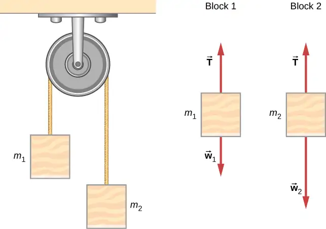
Strategy
We draw a free-body diagram for each mass separately, as shown in the figure. Then we analyze each diagram to find the required unknowns. This may involve the solution of simultaneous equations. It is also important to note the similarity with the previous example. As block 2 accelerates with acceleration \(a_{2}\) in the downward direction, block 1 accelerates upward with acceleration \(a_{1}\). Thus, \(a=a_{1}=-a_{2}.\)
Solution
a. We have
(The negative sign in front of \(m_{2}a\) indicates that \(m_{2}\) accelerates downward; both blocks accelerate at the same rate, but in opposite directions.) Solve the two equations simultaneously (subtract them) and the result is
Solving for a:
b. Observing the first block, we see that
Significance
The result for the acceleration given in the solution can be interpreted as the ratio of the unbalanced force on the system, \((m_{2}-m_{1})g\), to the total mass of the system, \(m_{1}+m_{2}\). We can also use the Atwood machine to measure local gravitational field strength.
Check Your Understanding
Determine a general formula in terms of \(m_{1},m_{2}\) and g for calculating the tension in the string for the Atwood machine shown above.
Answer
\(T=\frac{2m_{1}m_{2}}{m_{1}+m_{2}}g\) (This is found by substituting the equation for acceleration in Figure 6.7(a), into the equation for tension in Figure 6.7(b).)
Newton’s Laws of Motion and Kinematics¶
Physics is most interesting and most powerful when applied to general situations that involve more than a narrow set of physical principles. Newton’s laws of motion can also be integrated with other concepts that have been discussed previously in this text to solve problems of motion. For example, forces produce accelerations, a topic of kinematics, and hence the relevance of earlier chapters.
When approaching problems that involve various types of forces, acceleration, velocity, and/or position, listing the givens and the quantities to be calculated will allow you to identify the principles involved. Then, you can refer to the chapters that deal with a particular topic and solve the problem using strategies outlined in the text. The following worked example illustrates how the problem-solving strategy given earlier in this chapter, as well as strategies presented in other chapters, is applied to an integrated concept problem.
Example 6.6 What Force Must a Soccer Player Exert to Reach Top Speed?
A soccer player starts at rest and accelerates forward, reaching a velocity of 8.00 m/s in 2.50 s. (a) What is her average acceleration? (b) What average force does the ground exert forward on the runner so that she achieves this acceleration? The player’s mass is 70.0 kg, and air resistance is negligible.
Strategy
To find the answers to this problem, we use the problem-solving strategy given earlier in this chapter. The solutions to each part of the example illustrate how to apply specific problem-solving steps. In this case, we do not need to use all of the steps. We simply identify the physical principles, and thus the knowns and unknowns; apply Newton’s second law; and check to see whether the answer is reasonable.
Solution
a. We are given the initial and final velocities (zero and 8.00 m/s forward); thus, the change in velocity is \(\Delta v=8.00\:\text{m/s}\). We are given the elapsed time, so \(\Delta t=2.50\:\text{s}.\) The unknown is acceleration, which can be found from its definition:
Substituting the known values yields
b. Here we are asked to find the average force the ground exerts on the runner to produce this acceleration. (Remember that we are dealing with the force or forces acting on the object of interest.) This is the reaction force to that exerted by the player backward against the ground, by Newton’s third law. Neglecting air resistance, this would be equal in magnitude to the net external force on the player, since this force causes her acceleration. Since we now know the player’s acceleration and are given her mass, we can use Newton’s second law to find the force exerted. That is,
Substituting the known values of m and a gives
This is a reasonable result: The acceleration is attainable for an athlete in good condition. The force is about 50 pounds, a reasonable average force.
Significance
This example illustrates how to apply problem-solving strategies to situations that include topics from different chapters. The first step is to identify the physical principles, the knowns, and the unknowns involved in the problem. The second step is to solve for the unknown, in this case using Newton’s second law. Finally, we check our answer to ensure it is reasonable. These techniques for integrated concept problems will be useful in applications of physics outside of a physics course, such as in your profession, in other science disciplines, and in everyday life.
Check Your Understanding
The soccer player stops after completing the play described above, but now notices that the ball is in position to be stolen. If she now experiences a force of 126 N to attempt to steal the ball, which is 2.00 m away from her, how long will it take her to get to the ball?
Answer
1.49 s
Example 6.7 What Force Acts on a Model Helicopter?
A 1.50-kg model helicopter has a velocity of \(5.00\mathbf{\hat{j}}\:\text{m/s}\) at \(t=0.\) It is accelerated at a constant rate for two seconds (2.00 s) after which it has a velocity of \((6.00\mathbf{\hat{i}}+12.00\mathbf{\hat{j}})\text{m/s}.\) What is the magnitude of the resultant force acting on the helicopter during this time interval?
Strategy
We can easily set up a coordinate system in which the x-axis \((\mathbf{\hat{i}}\) direction) is horizontal, and the y-axis \((\mathbf{\hat{j}}\) direction) is vertical. We know that \(\Delta t=2.00s\) and \(\Delta v=(6.00\mathbf{\hat{i}}+12.00\mathbf{\hat{j}}\:\text{m/s})-(5.00\mathbf{\hat{j}}\:\text{m/s}).\) From this, we can calculate the acceleration by the definition; we can then apply Newton’s second law.
Solution
We have
The magnitude of the force is now easily found:
Significance
The original problem was stated in terms of \(\mathbf{\hat{i}}-\mathbf{\hat{j}}\) vector components, so we used vector methods. Compare this example with the previous example.
Check Your Understanding
Find the direction of the resultant for the 1.50-kg model helicopter.
Answer
49.4 degrees
Example 6.8 Baggage Tractor
Figure 6.8(a) shows a baggage tractor pulling luggage carts from an airplane. The tractor has mass 650.0 kg, while cart A has mass 250.0 kg and cart B has mass 150.0 kg. The driving force acting for a brief period of time accelerates the system from rest and acts for 3.00 s. (a) If this driving force is given by \(F=(820.0t)\:\text{N,}\) find the speed after 3.00 seconds. (b) What is the horizontal force acting on the connecting cable between the tractor and cart A at this instant?
![Figure (a) shows a baggage tractor driving to the left and pulling two luggage carts. The external forces on the system are shown. The forces on the tractor are F sub tractor, horizontally to the left, N sub tractor vertically up, and w sub tractor vertically down. The forces on the cart immediately behind the tractor, cart A, are N sub A vertically up, and w sub A vertically down. The forces on cart B, the one behind cart A, are N sub B vertically up, and w sub B vertically down. Figure (b) shows the free body diagram of the tractor, consisting of F sub tractor, horizontally to the left, N sub tractor vertically up, w sub tractor vertically down, and T horizontally to the right.](img/cnx-uphysics-06-01-baggage.webp)
Strategy
A free-body diagram shows the driving force of the tractor, which gives the system its acceleration. We only need to consider motion in the horizontal direction. The vertical forces balance each other and it is not necessary to consider them. For part b, we make use of a free-body diagram of the tractor alone to determine the force between it and cart A. This exposes the coupling force \(\mathbf{\vec{T}},\) which is our objective.
Solution
a. \(\displaystyle \sum F_{x}=m_{\text{system}}a_{x}\) and \(\displaystyle \sum F_{x}=820.0t,\) so
Since acceleration is a function of time, we can determine the velocity of the tractor by using \(a=\frac{dv}{dt}\) with the initial condition that \(v_{0}=0\) at \(t=0.\) We integrate from \(t=0\) to \(t=3\text{:}\)
b. Refer to the free-body diagram in Figure 6.8(b).
Significance
Since the force varies with time, we must use calculus to solve this problem. Notice how the total mass of the system was important in solving Figure 6.8(a), whereas only the mass of the truck (since it supplied the force) was of use in Figure 6.8(b).
Recall that \(v=\frac{ds}{dt}\) and \(a=\frac{dv}{dt}\). If acceleration is a function of time, we can use the calculus forms developed in Motion Along a Straight Line, as shown in this example. However, sometimes acceleration is a function of displacement. In this case, we can derive an important result from these calculus relations. Solving for dt in each, we have \(dt=\frac{ds}{v}\) and \(dt=\frac{dv}{a}.\) Now, equating these expressions, we have \(\frac{ds}{v}=\frac{dv}{a}.\) We can rearrange this to obtain \(a^{}ds=v^{}dv.\)
Example 6.9 Motion of a Projectile Fired Vertically
A 10.0-kg mortar shell is fired vertically upward from the ground, with an initial velocity of 50.0 m/s (see Figure 6.9). Determine the maximum height it will travel if atmospheric resistance is measured as \(F_{\text{D}}=(0.0100v^{2})\:\text{N,}\) where v is the speed at any instant.
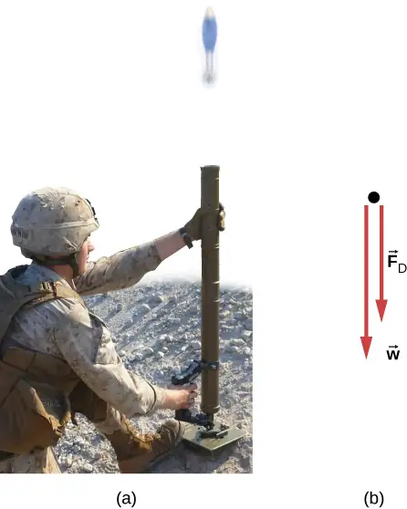
Strategy
The known force on the mortar shell can be related to its acceleration using the equations of motion. Kinematics can then be used to relate the mortar shell’s acceleration to its position.
Solution
Initially, \(y_{0}=0\) and \(v_{0}=50.0\:\text{m/s}.\) At the maximum height \(y=h,v=0.\) The free-body diagram shows \(F_{\text{D}}\) to act downward, because it slows the upward motion of the mortar shell. Thus, we can write
The acceleration depends on v and is therefore variable. Since \(a=f(v){,}\) we can relate a to v using the rearrangement described above,
We replace ds with dy because we are dealing with the vertical direction,
We now separate the variables (v’s and dv’s on one side; dy on the other):
Thus, \(h=114\:\text{m}.\)
Significance
Notice the need to apply calculus since the force is not constant, which also means that acceleration is not constant. To make matters worse, the force depends on v (not t), and so we must use the trick explained prior to the example. The answer for the height indicates a lower elevation if there were air resistance. We will deal with the effects of air resistance and other drag forces in greater detail in Drag Force and Terminal Speed.
Check Your Understanding
If atmospheric resistance is neglected, find the maximum height for the mortar shell. Is calculus required for this solution?
Answer
128 m; no
Media
Explore the forces at work in this simulation when you try to push a filing cabinet. Create an applied force and see the resulting frictional force and total force acting on the cabinet. Charts show the forces, position, velocity, and acceleration vs. time. View a free-body diagram of all the forces (including gravitational and normal forces).
6.2 Friction¶
Learning Objectives
By the end of this section, you will be able to:
- Describe the general characteristics of friction
- List the various types of friction
- Calculate the magnitude of static and kinetic friction, and use these in problems involving Newton’s laws of motion
When a body is in motion, it has resistance because the body interacts with its surroundings. This resistance is a force of friction. Friction opposes relative motion between systems in contact but also allows us to move, a concept that becomes obvious if you try to walk on ice. Friction is a common yet complex force, and its behavior still not completely understood. Still, it is possible to understand the circumstances in which it behaves.
Static and Kinetic Friction¶
The basic definition of friction is relatively simple to state.
Friction
Friction is a force that opposes relative motion between systems in contact.
There are several forms of friction. One of the simpler characteristics of sliding friction is that it is parallel to the contact surfaces between systems and is always in a direction that opposes motion or attempted motion of the systems relative to each other. If two systems are in contact and moving relative to one another, then the friction between them is called kinetic friction. For example, friction slows a hockey puck sliding on ice. When objects are stationary, static friction can act between them; the static friction is usually greater than the kinetic friction between two objects.
Static and Kinetic Friction
If two systems are in contact and stationary relative to one another, then the friction between them is called static friction. If two systems are in contact and moving relative to one another, then the friction between them is called kinetic friction.
Imagine, for example, trying to slide a heavy crate across a concrete floor—you might push very hard on the crate and not move it at all. This means that the static friction responds to what you do—it increases to be equal to and in the opposite direction of your push. If you finally push hard enough, the crate seems to slip suddenly and starts to move. Now static friction gives way to kinetic friction. Once in motion, it is easier to keep it in motion than it was to get it started, indicating that the kinetic frictional force is less than the static frictional force. If you add mass to the crate, say by placing a box on top of it, you need to push even harder to get it started and also to keep it moving. Furthermore, if you oiled the concrete you would find it easier to get the crate started and keep it going (as you might expect).
Figure 6.10 is a crude pictorial representation of how friction occurs at the interface between two objects. Close-up inspection of these surfaces shows them to be rough. Thus, when you push to get an object moving (in this case, a crate), you must raise the object until it can skip along with just the tips of the surface hitting, breaking off the points, or both. A considerable force can be resisted by friction with no apparent motion. The harder the surfaces are pushed together (such as if another box is placed on the crate), the more force is needed to move them. Part of the friction is due to adhesive forces between the surface molecules of the two objects, which explains the dependence of friction on the nature of the substances. For example, rubber-soled shoes slip less than those with leather soles. Adhesion varies with substances in contact and is a complicated aspect of surface physics. Once an object is moving, there are fewer points of contact (fewer molecules adhering), so less force is required to keep the object moving. At small but nonzero speeds, friction is nearly independent of speed.
![The figure shows a crate on a flat surface. A black arrow points toward the right, away from the crate, and is labeled as the direction of motion or attempted motion. A red arrow pointing toward the left is located near the bottom left corner of the crate, at the interface between that corner and the supporting surface and is labeled as f. A magnified view of a bottom corner of the crate and the supporting surface shows that the roughness in the two surfaces leads to small gaps between them. There is direct contact only at a few points.](img/cnx-uphysics-06-02-friction.webp)
The magnitude of the frictional force has two forms: one for static situations (static friction), the other for situations involving motion (kinetic friction). What follows is an approximate empirical (experimentally determined) model only. These equations for static and kinetic friction are not vector equations.
Magnitude of Static Friction
The magnitude of static friction \(f_{\text{s}}\) is
where \(\mu_{\text{s}}\) is the coefficient of static friction and N is the magnitude of the normal force.
The symbol \(\le\) means less than or equal to, implying that static friction can have a maximum value of \(\mu_{\text{s}}N.\) Static friction is a responsive force that increases to be equal and opposite to whatever force is exerted, up to its maximum limit. Once the applied force exceeds
\(f_{\text{s}}\text{(max),}\) the object moves. Thus,
Magnitude of Kinetic Friction
The magnitude of kinetic friction \(f_{\text{k}}\) is given by
where \(\mu_{\text{k}}\) is the coefficient of kinetic friction.
A system in which \(f_{\text{k}}=\mu_{\text{k}}N\) is described as a system in which friction behaves simply. The transition from static friction to kinetic friction is illustrated in Figure 6.11.
![(a) The figure shows a block on a horizontal surface. The situation is that of impending motion. The following forces are shown: N vertically up, w vertically down, F to the right, f sub s to the left. Vectors N and w are the same size. Vectors F and f sub s are the same size. (b) The figure shows a block on a horizontal surface. The motion is to the right. The situation is that of friction behaving simply. The following forces are shown: N vertically up, w vertically down, F to the right, f sub k to the left. Vectors N and w are the same size. Vectors F is larger than f sub s. (c) A graph of the magnitude of the friction force f as a function of the applied force F is shown. In the interval from 0 to when the magnitude of f equals f sub s max, the graph is a straight line described by f sub s equals F. This is the static region, and f sub s max equals mu sub s times N. For values of F larger than this maximum value of f, the graph drops a bit then flattens out to a somewhat noisy but constant on average value. This is the kinetic region in which the magnitude of f is f sub k which is also equal to mu sub k times N.](img/cnx-uphysics-06-02-frictgraph.webp)
As you can see in Table 6.1, the coefficients of kinetic friction are less than their static counterparts. The approximate values of \(\mu\) are stated to only one or two digits to indicate the approximate description of friction given by the preceding two equations.
Table 6.1 Approximate Coefficients of Static and Kinetic Friction
| System | Static Friction \(\mu_{\text{s}}\) | Kinetic Friction \(\mu_{\text{k}}\) |
|---|---|---|
| Rubber on dry concrete | 1.0 | 0.7 |
| Rubber on wet concrete | 0.5-0.7 | 0.3-0.5 |
| Wood on wood | 0.5 | 0.3 |
| Waxed wood on wet snow | 0.14 | 0.1 |
| Metal on wood | 0.5 | 0.3 |
| Steel on steel (dry) | 0.6 | 0.3 |
| Steel on steel (oiled) | 0.05 | 0.03 |
| Teflon on steel | 0.04 | 0.04 |
| Bone lubricated by synovial fluid | 0.016 | 0.015 |
| Shoes on wood | 0.9 | 0.7 |
| Shoes on ice | 0.1 | 0.05 |
| Ice on ice | 0.1 | 0.03 |
| Steel on ice | 0.04 | 0.02 |
Equation 6.1 and Equation 6.2 include the dependence of friction on materials and the normal force. The direction of friction is always opposite that of motion, parallel to the surface between objects, and perpendicular to the normal force. For example, if the crate you try to push (with a force parallel to the floor) has a mass of 100 kg, then the normal force is equal to its weight,
perpendicular to the floor. If the coefficient of static friction is 0.45, you would have to exert a force parallel to the floor greater than
to move the crate. Once there is motion, friction is less and the coefficient of kinetic friction might be 0.30, so that a force of only
keeps it moving at a constant speed. If the floor is lubricated, both coefficients are considerably less than they would be without lubrication. Coefficient of friction is a unitless quantity with a magnitude usually between 0 and 1.0. The actual value depends on the two surfaces that are in contact.
Many people have experienced the slipperiness of walking on ice. However, many parts of the body, especially the joints, have much smaller coefficients of friction—often three or four times less than ice. A joint is formed by the ends of two bones, which are connected by thick tissues. The knee joint is formed by the lower leg bone (the tibia) and the thighbone (the femur). The hip is a ball (at the end of the femur) and socket (part of the pelvis) joint. The ends of the bones in the joint are covered by cartilage, which provides a smooth, almost-glassy surface. The joints also produce a fluid (synovial fluid) that reduces friction and wear. A damaged or arthritic joint can be replaced by an artificial joint (Figure 6.12). These replacements can be made of metals (stainless steel or titanium) or plastic (polyethylene), also with very small coefficients of friction.
Natural lubricants include saliva produced in our mouths to aid in the swallowing process, and the slippery mucus found between organs in the body, allowing them to move freely past each other during heartbeats, during breathing, and when a person moves. Hospitals and doctor’s clinics commonly use artificial lubricants, such as gels, to reduce friction.
The equations given for static and kinetic friction are empirical laws that describe the behavior of the forces of friction. While these formulas are very useful for practical purposes, they do not have the status of mathematical statements that represent general principles (e.g., Newton’s second law). In fact, there are cases for which these equations are not even good approximations. For instance, neither formula is accurate for lubricated surfaces or for two surfaces sliding across each other at high speeds. Unless specified, we will not be concerned with these exceptions.
Example 6.10 Static and Kinetic Friction
A 20.0-kg crate is at rest on a floor as shown in Figure 6.13. The coefficient of static friction between the crate and floor is 0.700 and the coefficient of kinetic friction is 0.600. A horizontal force \(\mathbf{\vec{P}}\) is applied to the crate. Find the force of friction if (a) \(\mathbf{\vec{P}}=20.0\:\text{N}\mathbf{\hat{i}}{,}\) (b) \(\mathbf{\vec{P}}=30.0\:\text{N}\mathbf{\hat{i}}{,}\) (c) \(\mathbf{\vec{P}}=120.0\:\text{N}\mathbf{\hat{i}}{,}\) and (d) \(\mathbf{\vec{P}}=180.0\:\text{N}\mathbf{\hat{i}}.\)
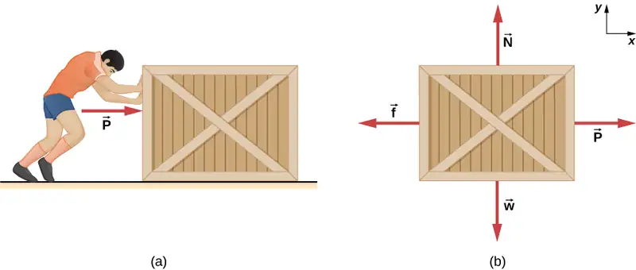
Strategy
The free-body diagram of the crate is shown in Figure 6.13(b). We apply Newton’s second law in the horizontal and vertical directions, including the friction force in opposition to the direction of motion of the box.
Solution
Newton’s second law GIVES
Here we are using the symbol f to represent the frictional force since we have not yet determined whether the crate is subject to station friction or kinetic friction. We do this whenever we are unsure what type of friction is acting. Now the weight of the crate is
which is also equal to N. The maximum force of static friction is therefore \((0.700)(196\:\text{N})=137\:\text{N}.\) As long as \(\mathbf{\vec{P}}\) is less than 137 N, the force of static friction keeps the crate stationary and \(f_{\text{s}}=\mathbf{\vec{P}}.\) Thus, (a) \(f_{s}=20.0\:\text{N,}\) (b) \(f_{s}=30.0\:\text{N,}\) and (c) \(f_{s}=120.0\:\text{N}.\)
(d) If \(\mathbf{\vec{P}}=180.0\:\text{N,}\) the applied force is greater than the maximum force of static friction (137 N), so the crate can no longer remain at rest. Once the crate is in motion, kinetic friction acts. Then
and the acceleration is
Significance
This example illustrates how we consider friction in a dynamics problem. Notice that static friction has a value that matches the applied force, until we reach the maximum value of static friction. Also, no motion can occur until the applied force equals the force of static friction, but the force of kinetic friction will then become smaller.
Check Your Understanding
A block of mass 1.0 kg rests on a horizontal surface. The frictional coefficients for the block and surface are \(\mu_{s}=0.50\) and \(\mu_{k}=0.40.\) (a) What is the minimum horizontal force required to move the block? (b) What is the block’s acceleration when this force is applied?
Answer
a. 4.9 N; b. 0.98 m/s2
Friction and the Inclined Plane¶
One situation where friction plays an obvious role is that of an object on a slope. It might be a crate being pushed up a ramp to a loading dock or a skateboarder coasting down a mountain, but the basic physics is the same. We usually generalize the sloping surface and call it an inclined plane but then pretend that the surface is flat. Let’s look at an example of analyzing motion on an inclined plane with friction.
Example 6.11 Downhill Skier
A skier with a mass of 62 kg is sliding down a snowy slope at a constant acceleration. Find the coefficient of kinetic friction for the skier if friction is known to be 45.0 N.
Strategy
The magnitude of kinetic friction is given as 45.0 N. Kinetic friction is related to the normal force \(N\) by \(f_{\text{k}}=\mu_{\text{k}}N\); thus, we can find the coefficient of kinetic friction if we can find the normal force on the skier. The normal force is always perpendicular to the surface, and since there is no motion perpendicular to the surface, the normal force should equal the component of the skier’s weight perpendicular to the slope. (See Figure 6.14, which repeats a figure from the chapter on Newton’s laws of motion.)
![The figure shows a skier going down a slope that forms an angle of 25 degrees with the horizontal. An x y coordinate system is shown, tilted so that the positive x direction is parallel to the slop, pointing up the slope, and the positive y direction is out of the slope, perpendicular to it. The weight of the skier, labeled w, is represented by a red arrow pointing vertically downward. This weight is divided into two components, w sub y is perpendicular to the slope pointing in the minus y direction, and w sub x is parallel to the slope, pointing in the minus x direction. The normal force, labeled N, is also perpendicular to the slope, equal in magnitude but pointing out, opposite in direction to w sub y. The friction, f, is represented by a red arrow pointing upslope. In addition, the figure shows a free body diagram that shows the relative magnitudes and directions of f, N, w, and the components w sub x and w sub y of w. In both diagrams, the w vector is scribbled out, as it is replaced by its components.](img/cnx-uphysics-06-02-skislope2.webp)
We have
Substituting this into our expression for kinetic friction, we obtain
which can now be solved for the coefficient of kinetic friction \(\mu_{\text{k}}.\)
Solution
Solving for \(\mu_{\text{k}}\) gives
Substituting known values on the right-hand side of the equation,
Significance
This result is a little smaller than the coefficient listed in Table 6.1 for waxed wood on snow, but it is still reasonable since values of the coefficients of friction can vary greatly. In situations like this, where an object of mass m slides down a slope that makes an angle \(\theta\) with the horizontal, friction is given by \(f_{\text{k}}=\mu_{\text{k}}mg\:\cos\:\theta.\) All objects slide down a slope with constant acceleration under these circumstances.
We have discussed that when an object rests on a horizontal surface, the normal force supporting it is equal in magnitude to its weight. Furthermore, simple friction is always proportional to the normal force. When an object is not on a horizontal surface, as with the inclined plane, we must find the force acting on the object that is directed perpendicular to the surface; it is a component of the weight.
We now derive a useful relationship for calculating coefficient of friction on an inclined plane. Notice that the result applies only for situations in which the object slides at constant speed down the ramp.
An object slides down an inclined plane at a constant velocity if the net force on the object is zero. We can use this fact to measure the coefficient of kinetic friction between two objects. As shown in Example 6.11, the kinetic friction on a slope is \(f_{k}=\mu_{k}mg\:\cos\:\theta\). The component of the weight down the slope is equal to \(mg\:\sin\:\theta\) (see the free-body diagram in Figure 6.14). These forces act in opposite directions, so when they have equal magnitude, the acceleration is zero. Writing these out,
Solving for \(\mu_{\text{k}},\) we find that
Put a coin on a book and tilt it until the coin slides at a constant velocity down the book. You might need to tap the book lightly to get the coin to move. Measure the angle of tilt relative to the horizontal and find \(\mu_{\text{k}}.\) Note that the coin does not start to slide at all until an angle greater than \(\theta\) is attained, since the coefficient of static friction is larger than the coefficient of kinetic friction. Think about how this may affect the value for \(\mu_{\text{k}}\) and its uncertainty.
Atomic-Scale Explanations of Friction¶
The simpler aspects of friction dealt with so far are its macroscopic (large-scale) characteristics. Great strides have been made in the atomic-scale explanation of friction during the past several decades. Researchers are finding that the atomic nature of friction seems to have several fundamental characteristics. These characteristics not only explain some of the simpler aspects of friction—they also hold the potential for the development of nearly friction-free environments that could save hundreds of billions of dollars in energy which is currently being converted (unnecessarily) into heat.
Figure 6.15 illustrates one macroscopic characteristic of friction that is explained by microscopic (small-scale) research. We have noted that friction is proportional to the normal force, but not to the amount of area in contact, a somewhat counterintuitive notion. When two rough surfaces are in contact, the actual contact area is a tiny fraction of the total area because only high spots touch. When a greater normal force is exerted, the actual contact area increases, and we find that the friction is proportional to this area.
![This figure has two parts, each of which shows two rough parallel surfaces in close proximity to each other. Because the surfaces are irregular, the two surfaces contact each other only at certain points, leaving gaps in between. In the first part, the normal force is small, so that the surfaces are farther apart and area of contact between the two surfaces is much smaller than their total area. In the second part, the normal force is large, so that the two surfaces are very close to each other and area of contact between the two surfaces has increased.](img/cnx-uphysics-06-02-force.webp)
However, the atomic-scale view promises to explain far more than the simpler features of friction. The mechanism for how heat is generated is now being determined. In other words, why do surfaces get warmer when rubbed? Essentially, atoms are linked with one another to form lattices. When surfaces rub, the surface atoms adhere and cause atomic lattices to vibrate—essentially creating sound waves that penetrate the material. The sound waves diminish with distance, and their energy is converted into heat. Chemical reactions that are related to frictional wear can also occur between atoms and molecules on the surfaces. Figure 6.16 shows how the tip of a probe drawn across another material is deformed by atomic-scale friction. The force needed to drag the tip can be measured and is found to be related to shear stress, which is discussed in Static Equilibrium and Elasticity. The variation in shear stress is remarkable (more than a factor of \({10}^{12}\)) and difficult to predict theoretically, but shear stress is yielding a fundamental understanding of a large-scale phenomenon known since ancient times—friction.
![This figure shows a molecular model of a probe that is dragged over the surface of a substrate. The substrate is represented by a rectangular grid of small spheres, each sphere representing an atom. The probe, made up of a different grid of small spheres, is in the form of an inverted pyramid with a flattened peak and horizontal layers of atoms. The pyramid is somewhat distorted because of friction. The atomic and molecular interactions occur at the interface between the probe and the substrate. The friction, f, is parallel to the surface and in the opposite direction of the motion of the probe.](img/cnx-uphysics-06-02-probe.webp)
Media
Engaging the simulation below, describe a model for friction on a molecular level. Describe matter in terms of molecular motion. The description should include diagrams to support the description; how the temperature affects the image; what are the differences and similarities between solid, liquid, and gas particle motion; and how the size and speed of gas molecules relate to everyday objects.
Example 6.12 Sliding Blocks
The two blocks of Figure 6.17 are attached to each other by a massless string that is wrapped around a frictionless pulley. When the bottom 4.00-kg block is pulled to the left by the constant force \(\mathbf{\vec{P}},\) the top 2.00-kg block slides across it to the right. Find the magnitude of the force necessary to move the blocks at constant speed. Assume that the coefficient of kinetic friction between all surfaces is 0.400.
![Figure (a) shows an illustration of a 4.0 kilogram block on a horizontal surface and a 2.0 kilogram block resting on top of it. A pulley is connected horizontally to a wall to the right of the blocks. The blocks are connected by a string that passes from one block, over the pulley, and to the other block so that the string is horizontal and to the right of each block. A force P pulls the lower block to the left. An x y coordinate system is shown, with positive x to the right and positive y up. Figure (b) shows the free body diagrams of the blocks. The upper block has forces mu times vector N sub 1 to the left, vector T to the right, 19.6 N vertically down, and vector N sub 1 up. The lower block has forces mu times vector N sub 1 to the right, mu times vector N sub 2 to the right, Vector P to the left, vector T sub i to the right, Vector N sub 1 vertically down, weight w down, and vector N sub 2 up.](img/cnx-uphysics-06-02-blocks.webp)
Strategy
We analyze the motions of the two blocks separately. The top block is subjected to a contact force exerted by the bottom block. The components of this force are the normal force \(N_{1}\) and the frictional force \(-0.400N_{1}.\) Other forces on the top block are the tension \(T\) in the string and the weight of the top block itself, 19.6 N. The bottom block is subjected to contact forces due to the top block and due to the floor. The first contact force has components \(-N_{1}\) and \(0.400N_{1},\) which are simply reaction forces to the contact forces that the bottom block exerts on the top block. The components of the contact force of the floor are \(N_{2}\) and \(0.400N_{2}.\) Other forces on this block are \(-P,\) the tension \(T,\) and the weight –39.2 N.
Solution
Since the top block is moving horizontally to the right at constant velocity, its acceleration is zero in both the horizontal and the vertical directions. From Newton’s second law,
Solving for the two unknowns, we obtain \(N_{1}=19.6\:\text{N}\) and \(T=0.40N_{1}=7.84\:\text{N}.\) The bottom block is also not accelerating, so the application of Newton’s second law to this block gives
The values of \(N_{1}\) and T were found with the first set of equations. When these values are substituted into the second set of equations, we can determine \(N_{2}\) and P. They are
Significance
Understanding what direction in which to draw the friction force is often troublesome. Notice that each friction force labeled in Figure 6.17 acts in the direction opposite the motion of its corresponding block.
Example 6.13 A Crate on an Accelerating Truck
A 50.0-kg crate rests on the bed of a truck as shown in Figure 6.18. The coefficients of friction between the surfaces are \(\mu_{\text{k}}=0.300\) and \(\mu_{\text{s}}=0.400.\) Find the frictional force on the crate when the truck is accelerating forward relative to the ground at (a) 2.00 m/s2, and (b) 5.00 m/s2.
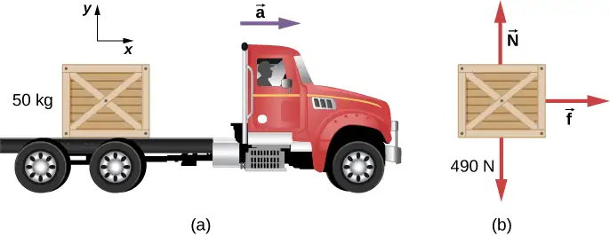
Strategy
The forces on the crate are its weight and the normal and frictional forces due to contact with the truck bed. We start by assuming that the crate is not slipping. In this case, the static frictional force \(f_{\text{s}}\) acts on the crate. Furthermore, the accelerations of the crate and the truck are equal.
Solution
a. Application of Newton’s second law to the crate, using the reference frame attached to the ground, yields
We can now check the validity of our no-slip assumption. The maximum value of the force of static friction is
whereas the actual force of static friction that acts when the truck accelerates forward at \(2.00\:\text{m/s}^{2}\) is only \(1.00\:\times\:{10}^{2}\:\text{N}.\) Thus, the assumption of no slipping is valid.
b. If the crate is to move with the truck when it accelerates at \(5.0\:\text{m/s}^{2},\) the force of static friction must be
Since this exceeds the maximum of 196 N, the crate must slip. The frictional force is therefore kinetic and is
The horizontal acceleration of the crate relative to the ground is now found from
Significance
Relative to the ground, the truck is accelerating forward at \(5.0\:\text{m/s}^{2}\) and the crate is accelerating forward at \(2.94\:\text{m/s}^{2}\). Hence the crate is sliding backward relative to the bed of the truck with an acceleration \(2.94\:\text{m/s}^{2}-5.00\:\text{m/s}^{2}=-2.06\:\text{m/s}^{2}.\)
Example 6.14 Snowboarding
Earlier, we analyzed the situation of a downhill skier moving at constant velocity to determine the coefficient of kinetic friction. Now let’s do a similar analysis to determine acceleration. The snowboarder of Figure 6.19 glides down a slope that is inclined at 13° to the horizontal. The coefficient of kinetic friction between the board and the snow is \(\mu_{\text{k}}=0.20.\) What is the acceleration of the snowboarder?
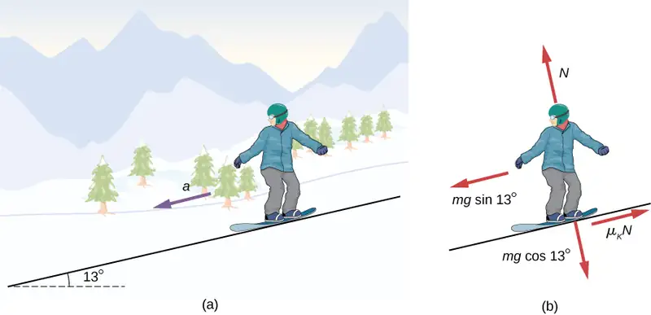
Strategy
The forces acting on the snowboarder are her weight and the contact force of the slope, which has a component normal to the incline and a component along the incline (force of kinetic friction). Because she moves along the slope, the most convenient reference frame for analyzing her motion is one with the x-axis along and the y-axis perpendicular to the incline. In this frame, both the normal and the frictional forces lie along coordinate axes, the components of the weight are \(mg\:\sin\:\theta\:\text{along the slope and}\:mg\:\cos\:\theta\:\text{at right angles into the slope}\), and the only acceleration is along the x-axis \((a_{y}=0).\)
Solution
We can now apply Newton’s second law to the snowboarder:
From the second equation, \(N=mg\:\cos\:\theta.\) Upon substituting this into the first equation, we find
Significance
Notice from this equation that if \(\theta\) is small enough or \(\mu_{\text{k}}\) is large enough, \(a_{x}\) is negative, that is, the snowboarder slows down.
Check Your Understanding
The snowboarder is now moving down a hill with incline \(10.0{}^{\circ}\). What is the snowboarder's acceleration?
Answer
\(\text{−0.23}\:\text{m/s}^{2}\); the negative sign indicates that the snowboarder is slowing down.
6.3 Centripetal Force¶
Learning Objectives
By the end of this section, you will be able to:
- Explain the equation for centripetal acceleration
- Apply Newton’s second law to develop the equation for centripetal force
- Use circular motion concepts in solving problems involving Newton’s laws of motion
In Motion in Two and Three Dimensions, we examined the basic concepts of circular motion. An object undergoing circular motion, like one of the race cars shown at the beginning of this chapter, must be accelerating because it is changing the direction of its velocity. We proved that this centrally directed acceleration, called centripetal acceleration, is given by the formula
where v is the velocity of the object, directed along a tangent line to the curve at any instant. If we know the angular velocity \(\omega\), then we can use
Angular velocity gives the rate at which the object is turning through the curve, in units of rad/s. This acceleration acts along the radius of the curved path and is thus also referred to as a radial acceleration.
An acceleration must be produced by a force. Any force or combination of forces can cause a centripetal or radial acceleration. Just a few examples are the tension in the rope on a tether ball, the force of Earth’s gravity on the Moon, friction between roller skates and a rink floor, a banked roadway’s force on a car, and forces on the tube of a spinning centrifuge. Any net force causing uniform circular motion is called a centripetal force. The direction of a centripetal force is toward the center of curvature, the same as the direction of centripetal acceleration. According to Newton’s second law of motion, net force is mass times acceleration: \(F_{\text{net}}=ma.\) For uniform circular motion, the acceleration is the centripetal acceleration:.\(a=a_{\text{c}}.\) Thus, the magnitude of centripetal force \(F_{\text{c}}\) is
By substituting the expressions for centripetal acceleration \(a_{\text{c}}\) \((a_{\text{c}}=\frac{v^{2}}{r};a_{\text{c}}=r\omega^{2}),\) we get two expressions for the centripetal force \(F_{\text{c}}\) in terms of mass, velocity, angular velocity, and radius of curvature:
equation callout
You may use whichever expression for centripetal force is more convenient. Centripetal force \({\mathbf{\vec{F}}}_{\text{c}}\)is always perpendicular to the path and points to the center of curvature, because \({\mathbf{\vec{a}}}_{\text{c}}\) is perpendicular to the velocity and points to the center of curvature. Note that if you solve the first expression for r, you get
This implies that for a given mass and velocity, a large centripetal force causes a small radius of curvature—that is, a tight curve, as in Figure 6.20.
![The figure consists of two semicircles. The semicircle on the left has radius r and bigger than the one on the right, which has radius r prime. In both the figures, the direction of the motion is given as counter-clockwise along the semicircles. A point is shown on the path, where the radius is shown with an arrow pointing out from the center of the semicircle. At the same point, the centripetal force, F sub c, is shown pointing inward, in the opposite direction to that of radius arrow. The velocity, v, is shown at this point as well, and it is tangent to the semicircle, pointing left and up, perpendicular to the forces. In both the figures, the velocity is same, but the radius prime is smaller and centripetal force is larger in the figure on the right. It is noted that vector F sub c is parallel to vector a sub c since vector F sub c equals m times vector a sub c.](img/cnx-uphysics-06-03-centforce.webp)
Example 6.15 What Coefficient of Friction Do Cars Need on a Flat Curve?
(a) Calculate the centripetal force exerted on a 900.0-kg car that negotiates a 500.0-m radius curve at 25.00 m/s. (b) Assuming an unbanked curve, find the minimum static coefficient of friction between the tires and the road, static friction being the reason that keeps the car from slipping (Figure 6.21).
![In this figure, a car is shown, driving away from the viewer and turning to the left on a level surface. The following forces are shown on the car: w pointing straight down, N pointing straight up, and f which equals F sub c which equals mu sub s times N, pointing to the left. The forces w and N act on the body of the car, while f acts where the wheel contacts the ground. The free body diagram is shown to the side of the illustration of the car and shows the forces w, N, and f as arrows with their tails all meeting at a point.](img/unnamed.webp)
Strategy
a. We know that \(F_{\text{c}}=\frac{mv^{2}}{r}.\) Thus,
b. Figure 6.21 shows the forces acting on the car on an unbanked (level ground) curve. Friction is to the left, keeping the car from slipping, and because it is the only horizontal force acting on the car, the friction is the centripetal force in this case. We know that the maximum static friction (at which the tires roll but do not slip) is \(\mu_{\text{s}}N,\) where \(\mu_{\text{s}}\) is the static coefficient of friction and N is the normal force. The normal force equals the car’s weight on level ground, so \(N=mg.\) Thus the centripetal force in this situation is
Now we have a relationship between centripetal force and the coefficient of friction. Using the equation
we obtain
We solve this for \(\mu_{\text{s}},\) noting that mass cancels, and obtain
Substituting the knowns,
(Because coefficients of friction are approximate, the answer is given to only two digits.)
Significance
The coefficient of friction found in Figure 6.21(b) is much smaller than is typically found between tires and roads. The car still negotiates the curve if the coefficient is greater than 0.13, because static friction is a responsive force, able to assume a value less than but no more than \(\mu_{\text{s}}N.\) A higher coefficient would also allow the car to negotiate the curve at a higher speed, but if the coefficient of friction is less, the safe speed would be less than 25 m/s. Note that mass cancels, implying that, in this example, it does not matter how heavily loaded the car is to negotiate the turn. Mass cancels because friction is assumed proportional to the normal force, which in turn is proportional to mass. If the surface of the road were banked, the normal force would be greater, as discussed next.
Check Your Understanding
A car moving at 96.8 km/h travels around a circular curve of radius 182.9 m on a flat country road. What must be the minimum coefficient of static friction to keep the car from slipping?
Answer
0.40
Banked Curves¶
Let us now consider banked curves, where the slope of the road helps you negotiate the curve (Figure 6.22). The greater the angle \(\theta\), the faster you can take the curve. Race tracks for bikes as well as cars, for example, often have steeply banked curves. In an “ideally banked curve,” the angle \(\theta\) is such that you can negotiate the curve at a certain speed without the aid of friction between the tires and the road. We will derive an expression for \(\theta\) for an ideally banked curve and consider an example related to it.
![In this figure, a car is shown, driving away from the viewer and turning to the left on a slope downward and to the left. The slope is at an angle theta with the horizontal surface below the slope. The free body diagram is superimposed on the car. The free body diagram shows weight, w, pointing vertically down, and force N, at an angle theta to the left of vertical. In addition to the force vectors, drawn as bold red arrows, the vertical and horizontal components of the N vector are shown as thin black arrows, one pointing vertically up and the other horizontally to the left. Two relations are given: N times cosine theta equals w, and N times sine theta equals the centripetal force and also equals the net force.](img/cnx-uphysics-06-03-bluecar.webp)
For ideal banking, the net external force equals the horizontal centripetal force in the absence of friction. The components of the normal force N in the horizontal and vertical directions must equal the centripetal force and the weight of the car, respectively. In cases in which forces are not parallel, it is most convenient to consider components along perpendicular axes—in this case, the vertical and horizontal directions.
Figure 6.22 shows a free-body diagram for a car on a frictionless banked curve. If the angle \(\theta\) is ideal for the speed and radius, then the net external force equals the necessary centripetal force. The only two external forces acting on the car are its weight \(\mathbf{\vec{w}}\) and the normal force of the road \(\mathbf{\vec{N}}.\) (A frictionless surface can only exert a force perpendicular to the surface—that is, a normal force.) These two forces must add to give a net external force that is horizontal toward the center of curvature and has magnitude \(mv^{2}\text{/}r.\) Because this is the crucial force and it is horizontal, we use a coordinate system with vertical and horizontal axes. Only the normal force has a horizontal component, so this must equal the centripetal force, that is,
Because the car does not leave the surface of the road, the net vertical force must be zero, meaning that the vertical components of the two external forces must be equal in magnitude and opposite in direction. From Figure 6.22, we see that the vertical component of the normal force is \(N\:\cos\:\theta,\) and the only other vertical force is the car’s weight. These must be equal in magnitude; thus,
Now we can combine these two equations to eliminate N and get an expression for \(\theta\), as desired. Solving the second equation for \(N=mg\text{/}(cos\theta)\) and substituting this into the first yields
Taking the inverse tangent gives
equation callout
This expression can be understood by considering how \(\theta\) depends on v and r. A large \(\theta\) is obtained for a large v and a small r. That is, roads must be steeply banked for high speeds and sharp curves. Friction helps, because it allows you to take the curve at greater or lower speed than if the curve were frictionless. Note that \(\theta\) does not depend on the mass of the vehicle.
Example 6.16 What Is the Ideal Speed to Take a Steeply Banked Tight Curve?
Curves on some test tracks and race courses, such as Daytona International Speedway in Florida, are very steeply banked. This banking, with the aid of tire friction and very stable car configurations, allows the curves to be taken at very high speed. To illustrate, calculate the speed at which a 100.0-m radius curve banked at \(31.0{}^{\circ}\) should be driven if the road were frictionless.
Strategy
We first note that all terms in the expression for the ideal angle of a banked curve except for speed are known; thus, we need only rearrange it so that speed appears on the left-hand side and then substitute known quantities.
Solution
Starting with
we get
Noting that \(\tan\:31.0{}^{\circ}=0.6009,\) we obtain
Significance
This is just about 87.5 km/h, consistent with a very steeply banked and rather sharp curve. Tire friction enables a vehicle to take the curve at significantly higher speeds.
Airplanes also make turns by banking. The lift force, due to the force of the air on the wing, acts at right angles to the wing. When the airplane banks, the pilot is obtaining greater lift than necessary for level flight. The vertical component of lift balances the airplane’s weight, and the horizontal component accelerates the plane. The banking angle shown in Figure 6.23 is given by \(\theta\). We analyze the forces in the same way we treat the case of the car rounding a banked curve.
![An illustration of an airplane coming toward us and banked (that is, tilted) by an angle theta in the clockwise direction, again as viewed by us. The weight w is shown as an arrow pointing straight down. A force L is shown pointing perpendicular to the wings, at an angle theta to the right of vertically up. The horizontal component of the force L is shown pointing to the right and is labeled as vector L sub horizontal. Dashed lines complete the parallelogram defined by vectors L and w, and show that the vertical component of L is the same size as w.](img/cnx-uphysics-06-03-bankangle.webp)
Media
Join the ladybug in an exploration of rotational motion. Rotate the merry-go-round to change its angle or choose a constant angular velocity or angular acceleration. Explore how circular motion relates to the bug’s xy-position, velocity, and acceleration using vectors or graphs.
Media
A circular motion requires a force, the so-called centripetal force, which is directed to the axis of rotation. This simplified model of a carousel demonstrates this force.
Inertial Forces and Noninertial (Accelerated) Frames: The Coriolis Force¶
What do taking off in a jet airplane, turning a corner in a car, riding a merry-go-round, and the circular motion of a tropical cyclone have in common? Each exhibits inertial forces—fictitious forces that merely seem to arise from motion, because the observer’s frame of reference is accelerating or rotating. When taking off in a jet, most people would agree it feels as if you are being pushed back into the seat as the airplane accelerates down the runway. Yet a physicist would say that you tend to remain stationary while the seat pushes forward on you. An even more common experience occurs when you make a tight curve in your car—say, to the right (Figure 6.24). You feel as if you are thrown (that is, forced) toward the left relative to the car. Again, a physicist would say that you are going in a straight line (recall Newton’s first law) but the car moves to the right, not that you are experiencing a force from the left.
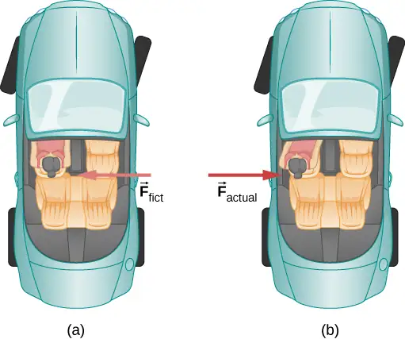
We can reconcile these points of view by examining the frames of reference used. Let us concentrate on people in a car. Passengers instinctively use the car as a frame of reference, whereas a physicist might use Earth. The physicist might make this choice because Earth is nearly an inertial frame of reference, in which all forces have an identifiable physical origin. In such a frame of reference, Newton’s laws of motion take the form given in Newton’s Laws of Motion. The car is a noninertial frame of reference because it is accelerated to the side. The force to the left sensed by car passengers is an inertial force having no physical origin (it is due purely to the inertia of the passenger, not to some physical cause such as tension, friction, or gravitation). The car, as well as the driver, is actually accelerating to the right.
A physicist will choose whatever reference frame is most convenient for the situation being analyzed. There is no problem to a physicist in including inertial forces and Newton’s second law, as usual, if that is more convenient, for example, on a merry-go-round or on a rotating planet. Noninertial (accelerated) frames of reference are used when it is useful to do so. Different frames of reference must be considered in discussing the motion of an astronaut in a spacecraft traveling at speeds near the speed of light, as you will appreciate in the study of the special theory of relativity.
Let us now take a mental ride on a merry-go-round—specifically, a rapidly rotating playground merry-go-round (Figure 6.25). You take the merry-go-round to be your frame of reference because you rotate together. When rotating in that noninertial frame of reference, you feel an inertial force that tends to throw you off; this is often referred to as a centrifugal force (not to be confused with centripetal force). Centrifugal force is a commonly used term, but it does not actually exist. You must hang on tightly to counteract your inertia (which people often refer to as centrifugal force). In Earth’s frame of reference, there is no force trying to throw you off; we emphasize that centrifugal force is a fiction. You must hang on to make yourself go in a circle because otherwise you would go in a straight line, right off the merry-go-round, in keeping with Newton’s first law. But the force you exert acts toward the center of the circle.
![In figure a, looking down on a merry-go-round, we see a child sitting on a horse moving in counterclockwise direction with angular velocity omega. The force F sub fict is equal to the centrifugal force at the point of contact between the pole carrying horse and the merry-go-round surface. The force is radially outward from the center of the merry-go-round. This is the merry-go-round’s rotating frame of reference. In figure b, we see the situation in the inertial frame of reference. seen rotating with angular velocity omega in the counterclockwise direction. The child on the horse is shown at the same position as in figure a. The net force is equal to the centripetal force, and points radially toward the center. In shadow, we are also shown the child as at an earlier position and at the position he would have if the net force on him were zero, which is straight forward and so at a larger radius than his actual position.](img/cnx-uphysics-06-03-inertia.webp)
This inertial effect, carrying you away from the center of rotation if there is no centripetal force to cause circular motion, is put to good use in centrifuges (Figure 6.26). A centrifuge spins a sample very rapidly, as mentioned earlier in this chapter. Viewed from the rotating frame of reference, the inertial force throws particles outward, hastening their sedimentation. The greater the angular velocity, the greater the centrifugal force. But what really happens is that the inertia of the particles carries them along a line tangent to the circle while the test tube is forced in a circular path by a centripetal force.
![Illustration of a test tube in a centrifuge, moving in a clockwise circle with angular velocity omega. The test tube is shown at two different positions: at the bottom of the circle and approximately 45 degrees later. It is oriented radially, with the open end closer to the center. The contents are at the bottom of the test tube. The following directions are indicated: In the bottom position, the centripetal acceleration a sub c is radially inward, the velocity, v, and the inertial force are horizontally in the direction of motion (to the left in the figure.) A short time later, when the tube has moved up and to the left, the centripetal acceleration a sub c is radially inward, the inertial force is to the left, and the centrifugal force is radially outward. We are told that the particle continues to left as test tube moves up. Therefore, particle moves down in tube by virtue of its inertia.](img/cnx-uphysics-06-03-centrifuge.webp)
Let us now consider what happens if something moves in a rotating frame of reference. For example, what if you slide a ball directly away from the center of the merry-go-round, as shown in Figure 6.27? The ball follows a straight path relative to Earth (assuming negligible friction) and a path curved to the right on the merry-go-round’s surface. A person standing next to the merry-go-round sees the ball moving straight and the merry-go-round rotating underneath it. In the merry-go-round’s frame of reference, we explain the apparent curve to the right by using an inertial force, called the Coriolis force, which causes the ball to curve to the right. The Coriolis force can be used by anyone in that frame of reference to explain why objects follow curved paths and allows us to apply Newton’s laws in noninertial frames of reference.
![(a) Points A and B lie on a radius of a merry-go round. Point A is closer to the center than B. Two children on horses, not on the same radius as A and B, are also shown. The merry-go-round is rotating counter-clockwise with angular velocity omega. A ball slides from point A outward. The path relative to the Earth is straight. (b) The merry go round is shown again, and the locations of point A and B at a later time are added and labeled A prime and B prime respectively. The path of the ball relative to the merry-go-round is a path that curve back.](img/cnx-uphysics-06-03-coriolis.webp)
Up until now, we have considered Earth to be an inertial frame of reference with little or no worry about effects due to its rotation. Yet such effects do exist—in the rotation of weather systems, for example. Most consequences of Earth’s rotation can be qualitatively understood by analogy with the merry-go-round. Viewed from above the North Pole, Earth rotates counterclockwise, as does the merry-go-round in Figure 6.27. As on the merry-go-round, any motion in Earth’s Northern Hemisphere experiences a Coriolis force to the right. Just the opposite occurs in the Southern Hemisphere; there, the force is to the left. Because Earth’s angular velocity is small, the Coriolis force is usually negligible, but for large-scale motions, such as wind patterns, it has substantial effects.
The Coriolis force causes hurricanes in the Northern Hemisphere to rotate in the counterclockwise direction, whereas tropical cyclones in the Southern Hemisphere rotate in the clockwise direction. (The terms hurricane, typhoon, and tropical storm are regionally specific names for cyclones, which are storm systems characterized by low pressure centers, strong winds, and heavy rains.) Figure 6.28 helps show how these rotations take place. Air flows toward any region of low pressure, and tropical cyclones contain particularly low pressures. Thus winds flow toward the center of a tropical cyclone or a low-pressure weather system at the surface. In the Northern Hemisphere, these inward winds are deflected to the right, as shown in the figure, producing a counterclockwise circulation at the surface for low-pressure zones of any type. Low pressure at the surface is associated with rising air, which also produces cooling and cloud formation, making low-pressure patterns quite visible from space. Conversely, wind circulation around high-pressure zones is clockwise in the Southern Hemisphere but is less visible because high pressure is associated with sinking air, producing clear skies.
![(a) A satellite photo of a hurricane. The clouds form a spiral that rotates counterclockwise. (b) A diagram of the flow involved in a hurricane. The pressure is low at the center. Straight dark blue arrows point in from all directions. Four such arrows are shown, from the north, east, south, and west. The wind, represented by light blue arrows, starts the same as the dark arrows but deflects to the right. (c) The pressure is low at the center. A dark blue circle indicates a counterclockwise rotation. Light blue arrows come in from all directions and deflect to the right, as they did in figure (b). (d) Now the pressure is high at the center. The dark blue circle again indicates clockwise rotation but the light blue arrows start at the center and point out and deflect to the right. (e) A satellite photo of a tropical cyclone. The clouds form a spiral that rotates clockwise.](img/cnx-uphysics-06-03-hurricane.webp)
The rotation of tropical cyclones and the path of a ball on a merry-go-round can just as well be explained by inertia and the rotation of the system underneath. When noninertial frames are used, inertial forces, such as the Coriolis force, must be invented to explain the curved path. There is no identifiable physical source for these inertial forces. In an inertial frame, inertia explains the path, and no force is found to be without an identifiable source. Either view allows us to describe nature, but a view in an inertial frame is the simplest in the sense that all forces have origins and explanations.
6.4 Drag Force and Terminal Speed¶
Learning Objectives
By the end of this section, you will be able to:
- Express the drag force mathematically
- Describe applications of the drag force
- Define terminal velocity
- Determine an object’s terminal velocity given its mass
Another interesting force in everyday life is the force of drag on an object when it is moving in a fluid (either a gas or a liquid). You feel the drag force when you move your hand through water. You might also feel it if you move your hand during a strong wind. The faster you move your hand, the harder it is to move. You feel a smaller drag force when you tilt your hand so only the side goes through the air—you have decreased the area of your hand that faces the direction of motion.
Drag Forces¶
Like friction, the drag force always opposes the motion of an object. Unlike simple friction, the drag force is proportional to some function of the velocity of the object in that fluid. This functionality is complicated and depends upon the shape of the object, its size, its velocity, and the fluid it is in. For most large objects such as cyclists, cars, and baseballs not moving too slowly, the magnitude of the drag force \(F_{\text{D}}\) is proportional to the square of the speed of the object. We can write this relationship mathematically as \(F_{\text{D}}\propto v^{2}.\) When taking into account other factors, this relationship becomes
equation callout
where C is the drag coefficient, A is the area of the object facing the fluid, and \(\rho\) is the density of the fluid. (Recall that density is mass per unit volume.) This equation can also be written in a more generalized fashion as \(F_{\text{D}}=bv^{n},\) where b is a constant equivalent to \(0.5C\rho A.\) We have set the exponent n for these equations as 2 because when an object is moving at high velocity through air, the magnitude of the drag force is proportional to the square of the speed. As we shall see in Fluid Mechanics, for small particles moving at low speeds in a fluid, the exponent n is equal to 1.
Drag Force
Drag force \(F_{\text{D}}\) is proportional to the square of the speed of the object. Mathematically,
where C is the drag coefficient, A is the area of the object facing the fluid, and \(\rho\) is the density of the fluid.
Athletes as well as car designers seek to reduce the drag force to lower their race times (Figure 6.29). Aerodynamic shaping of an automobile can reduce the drag force and thus increase a car’s gas mileage.
The value of the drag coefficient C is determined empirically, usually with the use of a wind tunnel (Figure 6.30).
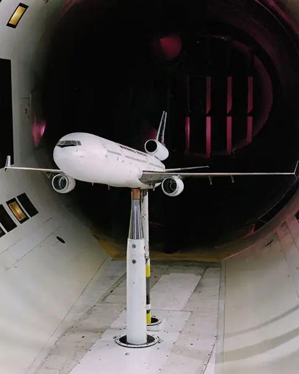
The drag coefficient can depend upon velocity, but we assume that it is a constant here. Table 6.2 lists some typical drag coefficients for a variety of objects. Notice that the drag coefficient is a dimensionless quantity. At highway speeds, over \(50\%\) of the power of a car is used to overcome air drag. The most fuel-efficient cruising speed is about 70–80 km/h (about 45–50 mi/h). For this reason, during the 1970s oil crisis in the United States, maximum speeds on highways were set at about 90 km/h (55 mi/h).
Table 6.2 Typical Values of Drag Coefficient C
| Object | C |
|---|---|
| Airfoil | 0.05 |
| Toyota Camry | 0.28 |
| Ford Focus | 0.32 |
| Honda Civic | 0.36 |
| Ferrari Testarossa | 0.37 |
| Dodge Ram Pickup | 0.43 |
| Sphere | 0.45 |
| Hummer H2 SUV | 0.64 |
| Skydiver (feet first) | 0.70 |
| Bicycle | 0.90 |
| Skydiver (horizontal) | 1.0 |
| Circular flat plate | 1.12 |
Substantial research is under way in the sporting world to minimize drag. The dimples on golf balls are being redesigned, as are the clothes that athletes wear. Bicycle racers and some swimmers and runners wear full bodysuits. Australian Cathy Freeman wore a full body suit in the 2000 Sydney Olympics and won a gold medal in the 400-m race. Many swimmers in the 2008 Beijing Olympics wore (Speedo) body suits; it might have made a difference in breaking many world records (Figure 6.31). Most elite swimmers (and cyclists) shave their body hair. Such innovations can have the effect of slicing away milliseconds in a race, sometimes making the difference between a gold and a silver medal. One consequence is that careful and precise guidelines must be continuously developed to maintain the integrity of the sport.
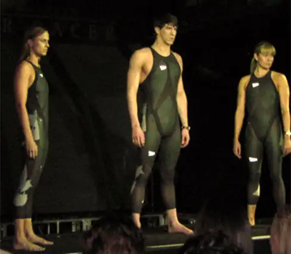
Terminal Velocity¶
Some interesting situations connected to Newton’s second law occur when considering the effects of drag forces upon a moving object. For instance, consider a skydiver falling through air under the influence of gravity. The two forces acting on him are the force of gravity and the drag force (ignoring the small buoyant force). The downward force of gravity remains constant regardless of the velocity at which the person is moving. However, as the person’s velocity increases, the magnitude of the drag force increases until the magnitude of the drag force is equal to the gravitational force, thus producing a net force of zero. A zero net force means that there is no acceleration, as shown by Newton’s second law. At this point, the person’s velocity remains constant and we say that the person has reached his terminal velocity \((v_{\text{T}}).\) Since \(F_{\text{D}}\) is proportional to the speed squared, a heavier skydiver must go faster for \(F_{\text{D}}\) to equal his weight. Let’s see how this works out more quantitatively.
At the terminal velocity,
Thus,
Using the equation for drag force, we have
Solving for the velocity, we obtain
Assume the density of air is \(\rho=1.21\:\text{kg/m}^{3}.\) A 75-kg skydiver descending head first has a cross-sectional area of approximately \(A=0.18\:\text{m}^{2}\) and a drag coefficient of approximately \(C=0.70\). We find that
This means a skydiver with a mass of 75 kg achieves a terminal velocity of about 350 km/h while traveling in a headfirst position, minimizing the area and his drag. In a spread-eagle position, that terminal velocity may decrease to about 200 km/h as the area increases. This terminal velocity becomes much smaller after the parachute opens.
Example 6.17 Terminal Velocity of a Skydiver
Find the terminal velocity of an 85-kg skydiver falling in a spread-eagle position. Assume that in the spread-eagle position, the diver has a cross-sectional area of \(0.70\:\text{m}^{2}\).
Strategy
At terminal velocity, \(F_{\text{net}}=0.\) Thus, the drag force on the skydiver must equal the force of gravity (the person’s weight). Using the equation of drag force, we find \(mg=\frac{1}{2}\rho CAv^{2}.\)
Solution
The terminal velocity \(v_{\text{T}}\) can be written as
Significance
This result is consistent with the value for \(v_{\text{T}}\) mentioned earlier. The 75-kg skydiver going feet first had a terminal velocity of \(v_{\text{T}}=98\:\text{m/s}.\) He weighed less but had a smaller frontal area and so a smaller drag due to the air.
Check Your Understanding
Find the terminal velocity of a 50-kg skydiver falling in spread-eagle fashion.
Answer
34 m/s
The size of the object that is falling through air presents another interesting application of air drag. If you fall from a 5-m-high branch of a tree, you will likely get hurt—possibly fracturing a bone. However, a small squirrel does this all the time, without getting hurt. You do not reach a terminal velocity in such a short distance, but the squirrel does.
The following interesting quote on animal size and terminal velocity is from a 1928 essay by a British biologist, J. B. S. Haldane, titled “On Being the Right Size.”
“To the mouse and any smaller animal, [gravity] presents practically no dangers. You can drop a mouse down a thousand-yard mine shaft; and, on arriving at the bottom, it gets a slight shock and walks away, provided that the ground is fairly soft. A rat is killed, a man is broken, and a horse splashes. For the resistance presented to movement by the air is proportional to the surface of the moving object. Divide an animal’s length, breadth, and height each by ten; its weight is reduced to a thousandth, but its surface only to a hundredth. So the resistance to falling in the case of the small animal is relatively ten times greater than the driving force.”
The above quadratic dependence of air drag upon velocity does not hold if the object is very small, is going very slow, or is in a denser medium than air. Then we find that the drag force is proportional just to the velocity. This relationship is given by Stokes’ law.
Stokes’ Law
For a spherical object falling in a medium, the drag force is
where r is the radius of the object, \(\eta\) is the viscosity of the fluid, and v is the object’s velocity.
Good examples of Stokes’ law are provided by microorganisms, pollen, and dust particles. Because each of these objects is so small, we find that many of these objects travel unaided only at a constant (terminal) velocity. Terminal velocities for bacteria (size about \(1\:\text{μm})\) can be about \(2\:\text{μm/s}.\) To move at a greater speed, many bacteria swim using flagella (organelles shaped like little tails) that are powered by little motors embedded in the cell.
Sediment in a lake can move at a greater terminal velocity (about \(5\:\text{μm/s}),\) so it can take days for it to reach the bottom of the lake after being deposited on the surface.
If we compare animals living on land with those in water, you can see how drag has influenced evolution. Fish, dolphins, and even massive whales are streamlined in shape to reduce drag forces. Birds are streamlined and migratory species that fly large distances often have particular features such as long necks. Flocks of birds fly in the shape of a spearhead as the flock forms a streamlined pattern (Figure 6.32). In humans, one important example of streamlining is the shape of sperm, which need to be efficient in their use of energy.
Media
In lecture demonstrations, we do measurements of the drag force on different objects. The objects are placed in a uniform airstream created by a fan. Calculate the drag coefficient.
The Calculus of Velocity-Dependent Frictional Forces¶
When a body slides across a surface, the frictional force on it is approximately constant and given by \(\mu_{\text{k}}N.\) Unfortunately, the frictional force on a body moving through a liquid or a gas does not behave so simply. This drag force is generally a complicated function of the body’s velocity. However, for a body moving in a straight line at moderate speeds through a liquid such as water, the frictional force can often be approximated by
where b is a constant whose value depends on the dimensions and shape of the body and the properties of the liquid, and v is the velocity of the body. Two situations for which the frictional force can be represented by this equation are a motorboat moving through water and a small object falling slowly through a liquid.
Let’s consider the object falling through a liquid. The free-body diagram of this object with the positive direction downward is shown in Figure 6.33. Newton’s second law in the vertical direction gives the differential equation
where we have written the acceleration as \(dv\text{/}dt.\) As v increases, the frictional force –bv increases until it matches mg. At this point, there is no acceleration and the velocity remains constant at the terminal velocity \(v_{\text{T}}.\) From the previous equation,
so
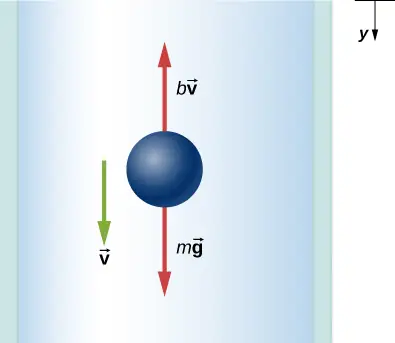
We can find the object’s velocity by integrating the differential equation for v. First, we rearrange terms in this equation to obtain
Assuming that \(v=0\:\text{at}\:t=0,\) integration of this equation yields
or
where \(v'\:\text{and}\:t'\) are dummy variables of integration. With the limits given, we find
Since \(\ln A-\ln B=\ln(A\text{/}B),\) and \(\ln(A\text{/}B)=x\:\text{implies}\:e^{x}=A\text{/}B,\) we obtain
and
Notice that as \(t\rightarrow\infty,v\rightarrow mg\text{/}b=v_{\text{T}},\) which is the terminal velocity.
The position at any time may be found by integrating the equation for v. With \(v=dy\text{/}dt,\)
Assuming \(y=0\:\text{when}\:t=0,\)
which integrates to
Example 6.18 Effect of the Resistive Force on a Motorboat
A motorboat is moving across a lake at a speed \(v_{0}\) when its motor suddenly freezes up and stops. The boat then slows down under the frictional force \(f_{R}=-bv.\) (a) What are the velocity and position of the boat as functions of time? (b) If the boat slows down from 4.0 to 1.0 m/s in 10 s, how far does it travel before stopping?
Solution
a. With the motor stopped, the only horizontal force on the boat is \(f_{R}=-bv,\) so from Newton’s second law,
which we can write as
Integrating this equation between the time zero when the velocity is \(v_{0}\) and the time t when the velocity is \(v\), we have
Thus,
which, since \(\ln A=x\:\text{implies}\:e^{x}=A,\) we can write this as
Now from the definition of velocity,
so we have
With the initial position zero, we have
and
As time increases, \(e^{-bt\text{/}m}\rightarrow 0,\) and the position of the boat approaches a limiting value
Although this tells us that the boat takes an infinite amount of time to reach \(x_{\max},\) the boat effectively stops after a reasonable time. For example, at \(t=10m\text{/}b,\) we have
whereas we also have
Therefore, the boat’s velocity and position have essentially reached their final values.
b. With \(v_{0}=4.0\:\text{m/s}\) and \(v=1.0\:\text{m/s,}\) we have \(1.0\:\text{m/s}=(4.0\:\text{m/s})e^{-(b\text{/}m)(10\:\text{s})},\) so
and
Now the boat’s limiting position is
Significance
In the both of the previous examples, we found “limiting” values. The terminal velocity is the same as the limiting velocity, which is the velocity of the falling object after a (relatively) long time has passed. Similarly, the limiting distance of the boat is the distance the boat will travel after a long amount of time has passed. Due to the properties of exponential decay, the time involved to reach either of these values is actually not too long (certainly not an infinite amount of time!) but they are quickly found by taking the limit to infinity.
Check Your Understanding
Suppose the resistive force of the air on a skydiver can be approximated by \(f=-bv^{2}\). If the terminal velocity of a 100-kg skydiver is 60 m/s, what is the value of b?
Answer
0.27 kg/m
Chapter Review¶
Key Terms¶
- banked curve
- curve in a road that is sloping in a manner that helps a vehicle negotiate the curve
- centripetal force
- any net force causing uniform circular motion
- Coriolis force
- inertial force causing the apparent deflection of moving objects when viewed in a rotating frame of reference
- drag force
- force that always opposes the motion of an object in a fluid; unlike simple friction, the drag force is proportional to some function of the velocity of the object in that fluid
- friction
- force that opposes relative motion or attempts at motion between systems in contact
- ideal banking
- sloping of a curve in a road, where the angle of the slope allows the vehicle to negotiate the curve at a certain speed without the aid of friction between the tires and the road; the net external force on the vehicle equals the horizontal centripetal force in the absence of friction
- inertial force
- force that has no physical origin
- kinetic friction
- force that opposes the motion of two systems that are in contact and moving relative to each other
- noninertial frame of reference
- accelerated frame of reference
- static friction
- force that opposes the motion of two systems that are in contact and are not moving relative to each other
- terminal velocity
- constant velocity achieved by a falling object, which occurs when the weight of the object is balanced by the upward drag force
Key Equations¶
| Magnitude of static friction | \(f_{\text{s}}\le\mu_{\text{s}}N\) |
| Magnitude of kinetic friction | \(f_{k}=\mu_{k}N\) |
| Centripetal force | \(F_{\text{c}}=m\frac{v^{2}}{r}\;\text{or}\;F_{\text{c}}=mr\omega^{2}\) |
| Ideal angle of a banked curve | \(\tan\:\theta=\frac{v^{2}}{rg}\) |
| Drag force | \(F_{D}=\frac{1}{2}C\rho Av^{2}\) |
| Stokes’ law | \(F_{\text{s}}=6\pi r\eta v\) |
Summary¶
6.1 Solving Problems with Newton’s Laws¶
- Newton’s laws of motion can be applied in numerous situations to solve motion problems.
- Some problems contain multiple force vectors acting in different directions on an object. Be sure to draw diagrams, resolve all force vectors into horizontal and vertical components, and draw a free-body diagram. Always analyze the direction in which an object accelerates so that you can determine whether \(F_{\text{net}}=ma\) or \(F_{\text{net}}=0.\)
- The normal force on an object is not always equal in magnitude to the weight of the object. If an object is accelerating vertically, the normal force is less than or greater than the weight of the object. Also, if the object is on an inclined plane, the normal force is always less than the full weight of the object.
- Some problems contain several physical quantities, such as forces, acceleration, velocity, or position. You can apply concepts from kinematics and dynamics to solve these problems.
6.2 Friction¶
- Friction is a contact force that opposes the motion or attempted motion between two systems. Simple friction is proportional to the normal force N supporting the two systems.
- The magnitude of static friction force between two materials stationary relative to each other is determined using the coefficient of static friction, which depends on both materials.
- The kinetic friction force between two materials moving relative to each other is determined using the coefficient of kinetic friction, which also depends on both materials and is always less than the coefficient of static friction.
6.3 Centripetal Force¶
-
Centripetal force \({\mathbf{\vec{F}}}_{\text{c}}\) is a “center-seeking” force that always points toward the center of rotation. It is perpendicular to linear velocity and has the magnitude
\[ F_{\text{c}}=ma_{\text{c}}. \] -
Rotating and accelerated frames of reference are noninertial. Inertial forces, such as the Coriolis force, are needed to explain motion in such frames.
6.4 Drag Force and Terminal Speed¶
- Drag forces acting on an object moving in a fluid oppose the motion. For larger objects (such as a baseball) moving at a velocity in air, the drag force is determined using the drag coefficient (typical values are given in Table 6.2), the area of the object facing the fluid, and the fluid density.
- For small objects (such as a bacterium) moving in a denser medium (such as water), the drag force is given by Stokes’ law.
Conceptual Questions¶
6.1 Solving Problems with Newton’s Laws¶
1. To simulate the apparent weightlessness of space orbit, astronauts are trained in the hold of a cargo aircraft that is accelerating downward at g. Why do they appear to be weightless, as measured by standing on a bathroom scale, in this accelerated frame of reference? Is there any difference between their apparent weightlessness in orbit and in the aircraft?
Answer
The scale is in free fall along with the astronauts, so the reading on the scale would be 0. There is no difference in the apparent weightlessness; in the aircraft and in orbit, free fall is occurring.
6.2 Friction¶
2. The glue on a piece of tape can exert forces. Can these forces be a type of simple friction? Explain, considering especially that tape can stick to vertical walls and even to ceilings.
3. When you learn to drive, you discover that you need to let up slightly on the brake pedal as you come to a stop or the car will stop with a jerk. Explain this in terms of the relationship between static and kinetic friction.
Answer
If you do not let up on the brake pedal, the car’s wheels will lock so that they are not rolling; sliding friction is now involved and the sudden change (due to the larger force of static friction) causes the jerk.
4. When you push a piece of chalk across a chalkboard, it sometimes screeches because it rapidly alternates between slipping and sticking to the board. Describe this process in more detail, in particular, explaining how it is related to the fact that kinetic friction is less than static friction. (The same slip-grab process occurs when tires screech on pavement.)
5. A physics major is cooking breakfast when she notices that the frictional force between her steel spatula and Teflon frying pan is only 0.200 N. Knowing the coefficient of kinetic friction between the two materials, she quickly calculates the normal force. What is it?
Answer
5.00 N
6.3 Centripetal Force¶
6. If you wish to reduce the stress (which is related to centripetal force) on high-speed tires, would you use large- or small-diameter tires? Explain.
7. Define centripetal force. Can any type of force (for example, tension, gravitational force, friction, and so on) be a centripetal force? Can any combination of forces be a centripetal force?
Answer
Centripetal force is defined as any net force causing uniform circular motion. The centripetal force is not a new kind of force. The label “centripetal” refers to any force that keeps something turning in a circle. That force could be tension, gravity, friction, electrical attraction, the normal force, or any other force. Any combination of these could be the source of centripetal force, for example, the centripetal force at the top of the path of a tetherball swung through a vertical circle is the result of both tension and gravity.
8. If centripetal force is directed toward the center, why do you feel that you are ‘thrown’ away from the center as a car goes around a curve? Explain.
9. Race car drivers routinely cut corners, as shown below (Path 2). Explain how this allows the curve to be taken at the greatest speed.
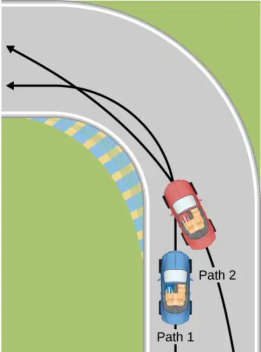
Answer
The driver who cuts the corner (on Path 2) has a more gradual curve, with a larger radius. That one will be the better racing line. If the driver goes too fast around a corner using a racing line, he will still slide off the track; the key is to stay at the maximum value of static friction. So, the driver wants maximum possible speed and maximum friction. Consider the equation for centripetal force: \(F_{\text{c}}=m\frac{v^{2}}{r}\) where v is speed and r is the radius of curvature. So by decreasing the curvature (1/r) of the path that the car takes, we reduce the amount of force the tires have to exert on the road, meaning we can now increase the speed, v. Looking at this from the point of view of the driver on Path 1, we can reason this way: the sharper the turn, the smaller the turning circle; the smaller the turning circle, the larger is the required centripetal force. If this centripetal force is not exerted, the result is a skid.
10. Many amusement parks have rides that make vertical loops like the one shown below. For safety, the cars are attached to the rails in such a way that they cannot fall off. If the car goes over the top at just the right speed, gravity alone will supply the centripetal force. What other force acts and what is its direction if:
(a) The car goes over the top at faster than this speed?
(b) The car goes over the top at slower than this speed?
11. What causes water to be removed from clothes in a spin-dryer?
Answer
The barrel of the dryer provides a centripetal force on the clothes (including the water droplets) to keep them moving in a circular path. As a water droplet comes to one of the holes in the barrel, it will move in a path tangent to the circle.
12. As a skater forms a circle, what force is responsible for making his turn? Use a free-body diagram in your answer.
13. Suppose a child is riding on a merry-go-round at a distance about halfway between its center and edge. She has a lunch box resting on wax paper, so that there is very little friction between it and the merry-go-round. (a) Which path shown below, as viewed from the ground, will the lunch box take when she lets go? (b) The lunch box leaves a trail in the dust on the merry-go-round. What is the shape of the dust trail? Explain your answers.
![An illustration of the circular base of a merry-go-round with a single horse and child on it. The angular velocity, omega, is clockwise, shown here with an arrow. A point P is shown near the horse, on a circle concentric with the merry-go-round. Three arrows are shown coming out of point P, depicting the three possible path of the lunch box. Path A curves into the circle, to the right from the perspective of the box. Path B is straight, tangent to the circle. Path C curves to the left from the perspective of the box, out of the circle.](img/cnx-uphysics-06-03-p8-img.webp)
Answer
(a) If there is no friction, then there is no centripetal force. This means that in the inertial frame of the ground, the lunch box will move along a straight path tangent to the circle, and thus follows path B. This is a result of Newton’s first law of motion. (b) The dust trail traces the motion of the box relative to the merry-go-round and will be radially out.
14. Do you feel yourself thrown to either side when you negotiate a curve that is ideally banked for your car’s speed? What is the direction of the force exerted on you by the car seat?
15. Suppose a mass is moving in a circular path on a frictionless table as shown below. In Earth’s frame of reference, there is no centrifugal force pulling the mass away from the center of rotation, yet there is a force stretching the string attaching the mass to the nail. Using concepts related to centripetal force and Newton’s third law, explain what force stretches the string, identifying its physical origin.
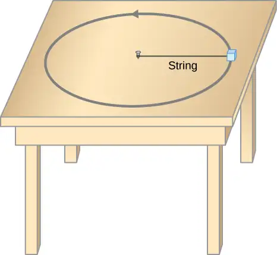
Answer
There must be a centripetal force to maintain the circular motion; this is provided by the nail at the center. Newton’s third law explains the phenomenon. The action force is the force of the string on the mass; the reaction force is the force of the mass on the string. This reaction force causes the string to stretch.
16. When a toilet is flushed or a sink is drained, the water (and other material) begins to rotate about the drain on the way down. Assuming no initial rotation and a flow initially directly straight toward the drain, explain what causes the rotation and which direction it has in the Northern Hemisphere. (Note that this is a small effect and in most toilets the rotation is caused by directional water jets.) Would the direction of rotation reverse if water were forced up the drain?
17. A car rounds a curve and encounters a patch of ice with a very low coefficient of kinetic fiction. The car slides off the road. Describe the path of the car as it leaves the road.
Answer
Since the radial friction with the tires supplies the centripetal force, and friction is nearly 0 when the car encounters the ice, the car will obey Newton’s first law and go off the road in a straight line path, tangent to the curve. A common misconception is that the car will follow a curved path off the road.
18. In one amusement park ride, riders enter a large vertical barrel and stand against the wall on its horizontal floor. The barrel is spun up and the floor drops away. Riders feel as if they are pinned to the wall by a force something like the gravitational force. This is an inertial force sensed and used by the riders to explain events in the rotating frame of reference of the barrel. Explain in an inertial frame of reference (Earth is nearly one) what pins the riders to the wall, and identify all forces acting on them.
19. Two friends are having a conversation. Anna says a satellite in orbit is in free fall because the satellite keeps falling toward Earth. Tom says a satellite in orbit is not in free fall because the acceleration due to gravity is not \(9.80\:\text{m/s}^{2}\). Who do you agree with and why?
Answer
Anna is correct. The satellite is freely falling toward Earth due to gravity, even though gravity is weaker at the altitude of the satellite, and g is not \(9.80\:\text{m/s}^{2}\). Free fall does not depend on the value of g; that is, you could experience free fall on Mars if you jumped off Olympus Mons (the tallest volcano in the solar system).
20. A nonrotating frame of reference placed at the center of the Sun is very nearly an inertial one. Why is it not exactly an inertial frame?
6.4 Drag Force and Terminal Speed¶
21. Athletes such as swimmers and bicyclists wear body suits in competition. Formulate a list of pros and cons of such suits.
Answer
The pros of wearing body suits include: (1) the body suit reduces the drag force on the swimmer and the athlete can move more easily; (2) the tightness of the suit reduces the surface area of the athlete, and even though this is a small amount, it can make a difference in performance time. The cons of wearing body suits are: (1) The tightness of the suits can induce cramping and breathing problems. (2) Heat will be retained and thus the athlete could overheat during a long period of use.
22. Two expressions were used for the drag force experienced by a moving object in a liquid. One depended upon the speed, while the other was proportional to the square of the speed. In which types of motion would each of these expressions be more applicable than the other one?
23. As cars travel, oil and gasoline leaks onto the road surface. If a light rain falls, what does this do to the control of the car? Does a heavy rain make any difference?
Answer
The oil is less dense than the water and so rises to the top when a light rain falls and collects on the road. This creates a dangerous situation in which friction is greatly lowered, and so a car can lose control. In a heavy rain, the oil is dispersed and does not affect the motion of cars as much.
24. Why can a squirrel jump from a tree branch to the ground and run away undamaged, while a human could break a bone in such a fall?
Problems¶
6.1 Solving Problems with Newton’s Laws¶
25. A 30.0-kg girl in a swing is pushed to one side and held at rest by a horizontal force \(\mathbf{\vec{F}}\) so that the swing ropes are \(30.0{}^{\circ}\) with respect to the vertical. (a) Calculate the tension in each of the two ropes supporting the swing under these conditions. (b) Calculate the magnitude of \(\mathbf{\vec{F}}.\)
Answer
a. 170 N; b. 170 N
26. Find the tension in each of the three cables supporting the traffic light if it weighs 2.00 × 102 N.
![A sketch of a traffic light suspended by a cable that is in turn suspended from two other cables is shown. Tension T sub 3 is the tension in the cable connecting the traffic light to the upper cables. Tension T sub one is the tension in the upper cable pulling up and to the left, making a 41 degree angle with the horizontal. Tension T sub two is the tension pulling up and to the right, making a 63 degree angle with the horizontal. Force vector w equal to 200 Newtons pulls vertically downward on the traffic light.](img/cnx-uphysics-06-01-p3-img.webp)
27. Three forces act on an object, considered to be a particle, which moves with constant velocity \(v=(3\mathbf{\hat{i}}-2\mathbf{\hat{j}})\:\text{m/s}.\) Two of the forces are \({\mathbf{\vec{F}}}_{1}=(3\mathbf{\hat{i}}+5\mathbf{\hat{j}})\:\text{N}\) and \({\mathbf{\vec{F}}}_{2}=(4\mathbf{\hat{i}}-7\mathbf{\hat{j}})\:\text{N}.\) Find the third force.
Answer
\({\mathbf{\vec{F}}}_{3}=(-7\mathbf{\hat{i}}+2\mathbf{\hat{j}})\:\text{N}\)
28. A flea jumps by exerting a force of \(1.20\:\times\:{10}^{-5}\:\text{N}\) straight down on the ground. A breeze blowing on the flea parallel to the ground exerts a force of \(0.500\:\times\:{10}^{-6}\:\text{N}\) on the flea while the flea is still in contact with the ground. Find the direction and magnitude of the acceleration of the flea if its mass is \(6.00\:\times\:{10}^{-7}\:\text{kg}\). Do not neglect the gravitational force.
29. Two muscles in the back of the leg pull upward on the Achilles tendon, as shown below. (These muscles are called the medial and lateral heads of the gastrocnemius muscle.) Find the magnitude and direction of the total force on the Achilles tendon. What type of movement could be caused by this force?
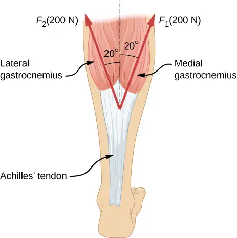
Answer
376 N pointing up (along the dashed line in the figure); the force is used to raise the heel of the foot.
30. After a mishap, a 76.0-kg circus performer clings to a trapeze, which is being pulled to the side by another circus artist, as shown here. Calculate the tension in the two ropes if the person is momentarily motionless. Include a free-body diagram in your solution.
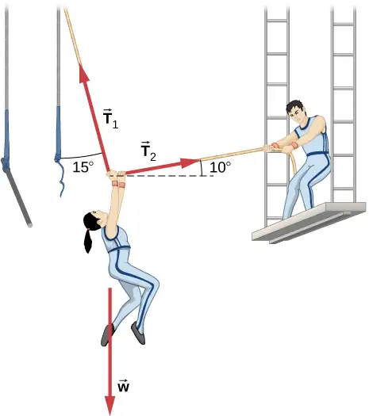
31. A 35.0-kg dolphin accelerates opposite to the motion from 12.0 to 7.50 m/s in 2.30 s to join another dolphin in play. What average force was exerted to slow the first dolphin if it was moving horizontally? (The gravitational force is balanced by the buoyant force of the water.)
Answer
−68.5 N
32. When starting a foot race, a 70.0-kg sprinter exerts an average force of 650 N backward on the ground for 0.800 s. (a) What is their final speed? (b) How far do they travel?
33. A large rocket has a mass of \(2.00\:\times\:{10}^{6}\:\text{kg}\) at takeoff, and its engines produce a thrust of \(3.50\:\times\:{10}^{7}\:\text{N}.\) (a) Find its initial acceleration if it takes off vertically. (b) How long does it take to reach a velocity of 120 km/h straight up, assuming constant mass and thrust?
Answer
a. \(7.70\:\text{m/s}^{2}\); b. 4.33 s
34. A basketball player jumps straight up for a ball. To do this, he lowers his body 0.300 m and then accelerates through this distance by forcefully straightening his legs. This player leaves the floor with a vertical velocity sufficient to carry him 0.900 m above the floor. (a) Calculate his velocity when he leaves the floor. (b) Calculate his acceleration while he is straightening his legs. He goes from zero to the velocity found in (a) in a distance of 0.300 m. (c) Calculate the force he exerts on the floor to do this, given that his mass is 110.0 kg.
35. A 2.50-kg fireworks shell is fired straight up from a mortar and reaches a height of 110.0 m. (a) Neglecting air resistance (a poor assumption, but we will make it for this example), calculate the shell’s velocity when it leaves the mortar. (b) The mortar itself is a tube 0.450 m long. Calculate the average acceleration of the shell in the tube as it goes from zero to the velocity found in (a). (c) What is the average force on the shell in the mortar? Express your answer in newtons and as a ratio to the weight of the shell.
Answer
a. 46.4 m/s; b. \(2.40\:\times\:{10}^{3}\:\text{m/s}^{2}\text{;}\) c. 5.99 × 103 N; ratio of 245
36. A 0.500-kg potato is fired at an angle of \(80.0{}^{\circ}\) above the horizontal from a PVC pipe used as a “potato gun” and reaches a height of 110.0 m. (a) Neglecting air resistance, calculate the potato’s velocity when it leaves the gun. (b) The gun itself is a tube 0.450 m long. Calculate the average acceleration of the potato in the tube as it goes from zero to the velocity found in (a). (c) What is the average force on the potato in the gun? Express your answer in newtons and as a ratio to the weight of the potato.
37. An elevator filled with passengers has a mass of \(1.70\:\times\:{10}^{3}\:\text{kg}\). (a) The elevator accelerates upward from rest at a rate of \(1.20\:\text{m/s}^{2}\) for 1.50 s. Calculate the tension in the cable supporting the elevator. (b) The elevator continues upward at constant velocity for 8.50 s. What is the tension in the cable during this time? (c) The elevator accelerates opposite to the motion at a rate of \(0.600\:\text{m/s}^{2}\) for 3.00 s. What is the tension in the cable during acceleration opposite to the motion? (d) How high has the elevator moved above its original starting point, and what is its final velocity?
Answer
a. \(1.87\:\times\:{10}^{4}\:\text{N;}\) b. \(1.67\:\times\:{10}^{4}\:\text{N;}\) c. \(1.56\:\times\:{10}^{4}\:\text{N;}\) d. 19.4 m, 0 m/s
38. A 20.0-g ball hangs from the roof of a freight car by a string. When the freight car begins to move, the string makes an angle of \(35.0{}^{\circ}\) with the vertical. (a) What is the acceleration of the freight car? (b) What is the tension in the string?
39. A student’s backpack, full of textbooks, is hung from a spring scale attached to the ceiling of an elevator. When the elevator is accelerating downward at \(3.8\:\text{m/s}^{2}\), the scale reads 60 N. (a) What is the mass of the backpack? (b) What does the scale read if the elevator moves upward while speeding up at a rate \(3.8\:\text{m/s}^{2}\)? (c) What does the scale read if the elevator moves upward at constant velocity? (d) If the elevator had no brakes and the cable supporting it were to break loose so that the elevator could fall freely, what would the spring scale read?
Answer
a. 10 kg; b. 140 N; c. 98 N; d. 0
40. A service elevator takes a load of garbage, mass 10.0 kg, from a floor of a skyscraper under construction, down to ground level, accelerating downward at a rate of \(1.2\:\text{m/s}^{2}\). Find the magnitude of the force the garbage exerts on the floor of the service elevator?
41. A roller coaster car starts from rest at the top of a track 30.0 m long and inclined at \(20.0{}^{\circ}\) to the horizontal. Assume that friction can be ignored. (a) What is the acceleration of the car? (b) How much time elapses before it reaches the bottom of the track?
Answer
a. \(3.35\:\text{m/s}^{2}\); b. 4.2 s
42. The device shown below is the Atwood’s machine considered in Example 6.5. Assuming that the masses of the string and the frictionless pulley are negligible, (a) find an equation for the acceleration of the two blocks; (b) find an equation for the tension in the string; and (c) find both the acceleration and tension when block 1 has mass 2.00 kg and block 2 has mass 4.00 kg.
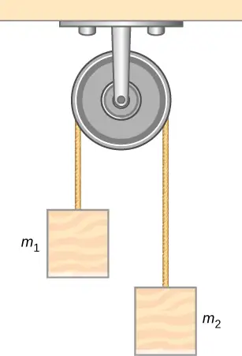
43. Two blocks are connected by a massless rope as shown below. The mass of the block on the table is 4.0 kg and the hanging mass is 1.0 kg. The table and the pulley are frictionless. (a) Find the acceleration of the system. (b) Find the tension in the rope. (c) Find the speed with which the hanging mass hits the floor if it starts from rest and is initially located 1.0 m from the floor.
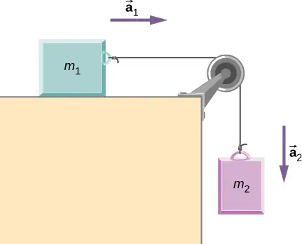
Answer
a. \(2.0\:\text{m/s}^{2};\) b. 7.8 N; c. 2.0 m/s
44. Shown below are two carts connected by a cord that passes over a small frictionless pulley. Each cart rolls freely with negligible friction. Calculate the acceleration of the carts and the tension in the cord.
45. A 2.00 kg block (mass 1) and a 4.00 kg block (mass 2) are connected by a light string as shown; the inclination of the ramp is \(40.0{}^{\circ}\). Friction is negligible. What is (a) the acceleration of each block and (b) the tension in the string?
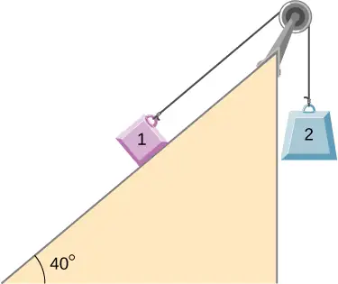
Answer
a. \(4.43\:\text{m/s}^{2}\) (mass 1 accelerates up the ramp as mass 2 falls with the same acceleration); b. 21.5 N
6.2 Friction¶
46. (a) When rebuilding an engine, a physics major must exert \(3.00\:\times\:{10}^{2}\) N of force to insert a dry steel piston into a steel cylinder. What is the normal force between the piston and cylinder? (b) What force would they have to exert if the steel parts were oiled?
47. (a) What is the maximum frictional force in the knee joint of a person who supports 66.0 kg of her mass on that knee? (b) During strenuous exercise, it is possible to exert forces to the joints that are easily 10 times greater than the weight being supported. What is the maximum force of friction under such conditions? The frictional forces in joints are relatively small in all circumstances except when the joints deteriorate, such as from injury or arthritis. Increased frictional forces can cause further damage and pain.
Answer
a. 10.0 N; b. 97.0 N
48. Suppose you have a 120-kg wooden crate resting on a wood floor, with coefficient of static friction 0.500 between these wood surfaces. (a) What maximum force can you exert horizontally on the crate without moving it? (b) If you continue to exert this force once the crate starts to slip, what will its acceleration then be? The coefficient of sliding friction is known to be 0.300 for this situation.
49. (a) If half of the weight of a small \(1.00\:\times\:{10}^{3}\text{-kg}\) utility truck is supported by its two drive wheels, what is the maximum acceleration it can achieve on dry concrete? (b) Will a metal cabinet lying on the wooden bed of the truck slip if it accelerates at this rate? (c) Solve both problems assuming the truck has four-wheel drive.
Answer
a. \(4.9\:\text{m/s}^{2}\); b. The cabinet will not slip. c. The cabinet will slip.
50. A team of eight dogs pulls a sled with waxed wood runners on wet snow (mush!). The dogs have average masses of 19.0 kg, and the loaded sled with its rider has a mass of 210 kg. (a) Calculate the acceleration of the dogs starting from rest if each dog exerts an average force of 185 N backward on the snow. (b) Calculate the force in the coupling between the dogs and the sled.
51. Consider the 65.0-kg ice skater being pushed by two others shown below. (a) Find the direction and magnitude of \({\mathbf{F}}_{\text{tot}},\) the total force exerted on her by the others, given that the magnitudes \(F_{1}\) and \(F_{2}\) are 26.4 N and 18.6 N, respectively. (b) What is her initial acceleration if she is initially stationary and wearing steel-bladed skates that point in the direction of \({\mathbf{F}}_{\text{tot}}?\) (c) What is her acceleration assuming she is already moving in the direction of \({\mathbf{F}}_{\text{tot}}?\) (Remember that friction always acts in the direction opposite that of motion or attempted motion between surfaces in contact.)
![(a) Overhead view of two ice skaters pushing on a third. One skater pushes with a force F one, represented by an arrow pointing to the right, and a second skater pushes with a force F two, represented by an arrow pointing up. Vector F one and vector F two are along the arms of the two skaters acting on the third skater. A vector diagram is shown in the form of a right triangle in which the base is vector F one pointing to the right, and perpendicular to F one is vector F two pointing up. The resultant vector is shown by the hypotenuse pointing up and to the right and is labeled as vector F sub tot. (b) Free body diagram showing only the forces F sub one and F sub 2 acting on the skater.](img/cnx-uphysics-06-02-p10-img.webp)
Answer
a. 32.3 N, \(35.2{}^{\circ};\) b. 0; c. \(0.301\:\text{m/s}^{2}\) in the direction of \({\mathbf{\vec{F}}}_{\text{tot}}\)
52. Show that the acceleration of any object down a frictionless incline that makes an angle \(\theta\) with the horizontal is \(a=g\:\sin\:\theta\). (Note that this acceleration is independent of mass.)
![An illustration of block on a slope. The slope angles down and to the right at an angle of theta degrees to the horizontal. The block has an acceleration a parallel to the slope, toward its bottom. The following forces are shown: N perpendicular to the slope and pointing out of it, and w which equals m times g vertically down. An x y coordinate system is shown tilted so that positive x is downslope, parallel to the surface, and positive y is perpendicular to the slope, pointing out of the surface.](img/cnx-uphysics-06-02-p11ans-img.webp)
53. Show that the acceleration of any object down an incline where friction behaves simply (that is, where \(f_{\text{k}}=\mu_{\text{k}}N)\) is \(a=g(\sin\:\theta-\mu_{\text{k}}\:\cos\:\theta).\) Note that the acceleration is independent of mass and reduces to the expression found in the previous problem when friction becomes negligibly small \((\mu_{\text{k}}=0).\)
![An illustration of block on a slope. The slope angles down and to the right at an angle of theta degrees to the horizontal. The block has an acceleration, a, parallel to the slope, toward its bottom. The following forces are shown: f in a direction parallel to the slope toward its top, N perpendicular to the slope and pointing out of it, w sub x in a direction parallel to the slope toward its bottom, and w sub y perpendicular to the slope and pointing into it. An x y coordinate system is shown tilted so that positive x is downslope, parallel to the surface, and positive y is perpendicular to the slope, pointing out of the surface.](img/cnx-uphysics-06-02-p12ans-img-new.webp)
Answer
\(\begin{array}{ccc} \text{net}\:F_{y} & = & 0\Rightarrow N=mg\:\cos\:\theta \\ \text{net}\:F_{x} & = & ma \\ a & = & g(\sin\:\theta-\mu_{\text{k}}\:\cos\:\theta) \end{array}\)
54. Calculate the acceleration opposite to the motion of a snow boarder going up a \(5.00{}^{\circ}\) slope, assuming the coefficient of friction for waxed wood on wet snow. The result of the preceding problem may be useful, but be careful to consider the fact that the snow boarder is going uphill.
55. A machine at a post office sends packages out a chute and down a ramp to be loaded into delivery vehicles. (a) Calculate the acceleration of a box heading down a \(10.0{}^{\circ}\) slope, assuming the coefficient of friction for a parcel on waxed wood is 0.100. (b) Find the angle of the slope down which this box could move at a constant velocity. You can neglect air resistance in both parts.
Answer
a. \(0.737\:\text{m/s}^{2};\) b. \(5.71{}^{\circ}\)
56. If an object is to rest on an incline without slipping, then friction must equal the component of the weight of the object parallel to the incline. This requires greater and greater friction for steeper slopes. Show that the maximum angle of an incline above the horizontal for which an object will not slide down is \(\theta=\tan^{-1}\:\mu_{\text{s}}.\) You may use the result of the previous problem. Assume that \(a=0\) and that static friction has reached its maximum value.
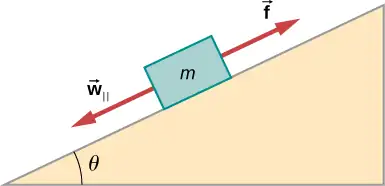
57. Calculate the maximum acceleration of a car that is heading down a \(6.00{}^{\circ}\) slope (one that makes an angle of \(6.00{}^{\circ}\) with the horizontal) under the following road conditions. You may assume that the weight of the car is evenly distributed on all four tires and that the coefficient of static friction is involved—that is, the tires are not allowed to slip during the acceleration opposite to the motion. (Ignore rolling.) Calculate for a car: (a) On dry concrete. (b) On wet concrete. (c) On ice, assuming that \(\mu_{\text{s}}=0.100\), the same as for shoes on ice.
Answer
a. \(10.8\:\text{m/s}^{2};\) b. \(7.85\:\text{m/s}^{2};\) c. \(2.00\:\text{m/s}^{2}\)
58. Calculate the maximum acceleration of a car that is heading up a \(4.00{}^{\circ}\) slope (one that makes an angle of \(4.00{}^{\circ}\) with the horizontal) under the following road conditions. Assume that only half the weight of the car is supported by the two drive wheels and that the coefficient of static friction is involved—that is, the tires are not allowed to slip during the acceleration. (Ignore rolling.) (a) On dry concrete. (b) On wet concrete. (c) On ice, assuming that \(\mu_{\text{s}}=0.100\), the same as for shoes on ice.
59. Repeat the preceding problem for a car with four-wheel drive.
Answer
a. \(9.09\:\text{m/s}^{2};\) b. \(6.16\:\text{m/s}^{2};\) c. \(0.294\:\text{m/s}^{2}\)
60. A freight train consists of two \(8.00\:\times\:{10}^{5}\text{-kg}\) engines and 45 cars with average masses of \(5.50\:\times\:{10}^{5}\:\text{kg}.\) (a) What force must each engine exert backward on the track to accelerate the train at a rate of \(5.00\:\times\:{10}^{-2}\text{m}\text{/}\text{s}^{2}\) if the force of friction is \(7.50\:\times\:{10}^{5}\text{N}\), assuming the engines exert identical forces? This is not a large frictional force for such a massive system. Rolling friction for trains is small, and consequently, trains are very energy-efficient transportation systems. (b) What is the force in the coupling between the 37th and 38th cars (this is the force each exerts on the other), assuming all cars have the same mass and that friction is evenly distributed among all of the cars and engines?
61. Consider the 52.0-kg mountain climber shown below. (a) Find the tension in the rope and the force that the mountain climber must exert with her feet on the vertical rock face to remain stationary. Assume that the force is exerted parallel to her legs. Also, assume negligible force exerted by her arms. (b) What is the minimum coefficient of friction between her shoes and the cliff?
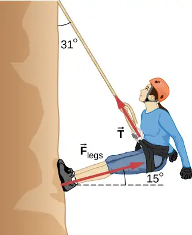
Answer
a. 272 N, 512 N; b. 0.268
62. A contestant in a winter sporting event pushes a 45.0-kg block of ice across a frozen lake as shown below. The coefficient of friction of ice can be found in Table 6.1. (a) Calculate the minimum force F he must exert to get the block moving. (b) What is its acceleration once it starts to move, if that force is maintained?
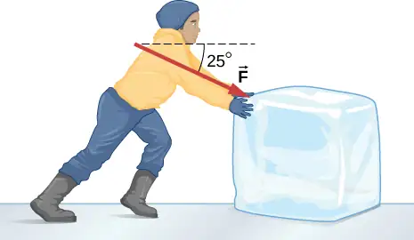
63. The contestant now pulls the block of ice with a rope over his shoulder at the same angle above the horizontal as shown below. The coefficient of friction of ice can be found in Table 6.1. Calculate the minimum force F he must exert to get the block moving. (b) What is its acceleration once it starts to move, if that force is maintained?
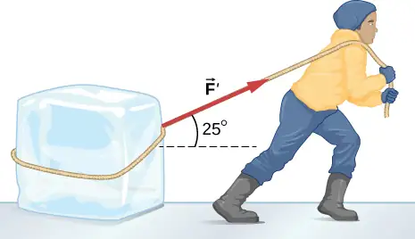
Answer
a. 46.5 N; b. \(0.655\:\text{m/s}^{2}\)
64. At a post office, a parcel that is a 20.0-kg box slides down a ramp inclined at \(30.0{}^{\circ}\) with the horizontal. The coefficient of kinetic friction between the box and plane is 0.0300. (a) Find the acceleration of the box. (b) Find the velocity of the box as it reaches the end of the plane, if the length of the plane is 2 m and the box starts at rest.
6.3 Centripetal Force¶
65. (a) A 22.0-kg child is riding a playground merry-go-round that is rotating at 40.0 rev/min. What centripetal force is exerted if he is 1.25 m from its center? (b) What centripetal force is exerted if the merry-go-round rotates at 3.00 rev/min and he is 8.00 m from its center? (c) Compare each force with his weight.
Answer
a. 483 N; b. 17.4 N; c. 2.24, 0.0807
66. Calculate the centripetal force on the end of a 100-m (radius) wind turbine blade that is rotating at 0.5 rev/s. Assume the mass is 4 kg.
67. What is the ideal banking angle for a gentle turn of 1.20-km radius on a highway with a 105 km/h speed limit (about 65 mi/h), assuming everyone travels at the limit?
Answer
\(4.14{}^{\circ}\)
68. What is the ideal speed to take a 100.0-m-radius curve banked at a \(20.0{}^{\circ}\) angle?
69. (a) What is the radius of a bobsled turn banked at \(75.0{}^{\circ}\) and taken at 30.0 m/s, assuming it is ideally banked? (b) Calculate the centripetal acceleration. (c) Does this acceleration seem large to you?
Answer
a. 24.6 m; b. \(36.6\:\text{m/s}^{2};\) c. 3.73 times g
70. Part of riding a bicycle involves leaning at the correct angle when making a turn, as seen below. To be stable, the force exerted by the ground must be on a line going through the center of gravity. The force on the bicycle wheel can be resolved into two perpendicular components—friction parallel to the road (this must supply the centripetal force) and the vertical normal force (which must equal the system’s weight). (a) Show that \(\theta\) (as defined as shown) is related to the speed v and radius of curvature r of the turn in the same way as for an ideally banked roadway—that is, \(\theta=\tan^{-1}(v^{2}\text{/}rg).\) (b) Calculate \(\theta\) for a 12.0-m/s turn of radius 30.0 m (as in a race).
![The figure is an illustration of a man riding a bicycle, viewed from the front. The rider and bike are tilted to the right at an angle theta to the vertical. Three force vectors are shown as solid line arrows. One is from the bottom of the front wheel to the right showing the centripetal force F sub c. A second is from the same point vertically upward showing the force N. The third is from the chest of the rider vertically downward showing his weight, w. An additional broken line arrow from the bottom of the wheel to the chest point, at an angle theta to the right of vertical, is also shown and labeled with force F exerting on it. The vectors F sub c, w and F form a right triangle whose hypotenuse is F. A free-body diagram is also given above the figure showing vectors w and F. The vector relations F equals the sum of N and F sub c, and N equals w are also given alongside the figure.](img/cnx-uphysics-06-03-p21-img.webp)
71. If a car takes a banked curve at less than the ideal speed, friction is needed to keep it from sliding toward the inside of the curve (a problem on icy mountain roads). (a) Calculate the ideal speed to take a 100.0 m radius curve banked at \(15.0{}^{\circ}\). (b) What is the minimum coefficient of friction needed for a frightened driver to take the same curve at 20.0 km/h?
Answer
a. 16.2 m/s; b. 0.234
72. Modern roller coasters have vertical loops like the one shown here. The radius of curvature is smaller at the top than on the sides so that the downward centripetal acceleration at the top will be greater than the acceleration due to gravity, keeping the passengers pressed firmly into their seats. What is the speed of the roller coaster at the top of the loop if the radius of curvature there is 15.0 m and the downward acceleration of the car is 1.50 g?
![An illustration of a loop of a roller. The radius of curvature is smaller at the top than on the sides and bottom. The radius of the loop at the tom is shown and labeled as r sub minimum. The radius at the lowest part of the loop is labeled as r sub maximum. The track is on the inside surface of the loop. The motion is indicated by arrows, starting at ground level to the right of the loop, going up inside the loop on the left, then down the inside right of the loop, and out again at ground level on the left. Four location on the track, A, B, C, and D and B, are labeled. Point A is at ground level, to the right of the loop, where the track is straight and horizontal. Point B is part way up the left side of the loop. Point C is part way up the right side of the loop, at the same level as point B. Point D is at ground level, to the left of the loop, where the track is straight and horizontal.](img/cnx-uphysics-06-03-p24-img.webp)
73. A child of mass 40.0 kg is in a roller coaster car that travels in a loop of radius 7.00 m. At point A the speed of the car is 10.0 m/s, and at point B, the speed is 10.5 m/s. Assume the child is not holding on and does not wear a seat belt. (a) What is the force of the car seat on the child at point A? (b) What is the force of the car seat on the child at point B? (c) What minimum speed is required to keep the child in his seat at point A?
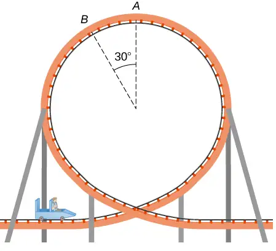
Answer
a. 179 N; b. 290 N; c. 8.3 m/s
74. In the simple Bohr model of the ground state of the hydrogen atom, the electron travels in a circular orbit around a fixed proton. The radius of the orbit is \(5.28\:\times\:{10}^{-11}\:\text{m,}\) and the speed of the electron is \(2.18\:\times\:{10}^{6}\:\text{m}\text{/}\text{s}.\) The mass of an electron is \(9.11\:\times\:{10}^{-31}\:\text{kg}\). What is the force on the electron?
75. Railroad tracks follow a circular curve of radius 500.0 m and are banked at an angle of \(5.0{}^{\circ}\). For trains of what speed are these tracks designed?
Answer
20.7 m/s
76. The CERN particle accelerator is circular with a circumference of 26.7 km. (a) What is the acceleration of the protons \((m=1.67\:\times\:{10}^{-27}\:\text{kg})\) that move around the accelerator at \(5\%\) of the speed of light? (The speed of light is \(v=3.00\:\times\:{10}^{8}\:\text{m/s}.\)) (b) What is the force on the protons?
77. A car rounds an unbanked curve of radius 65 m. If the coefficient of static friction between the road and car is 0.70, what is the maximum speed at which the car can traverse the curve without slipping?
Answer
21 m/s
78. A banked highway is designed for traffic moving at 90.0 km/h. The radius of the curve is 310 m. What is the angle of banking of the highway?
6.4 Drag Force and Terminal Speed¶
79. The terminal velocity of a person falling in air depends upon the weight and the area of the person facing the fluid. Find the terminal velocity (in meters per second and kilometers per hour) of an 80.0-kg skydiver falling in a headfirst position with a surface area of \(0.140\:\text{m}^{2}\).
Answer
115 m/s or 414 km/h
80. A 60.0-kg and a 90.0-kg skydiver jump from an airplane at an altitude of \(6.00\:\times\:{10}^{3}\text{m}\), both falling in a headfirst position. Make some assumption on their frontal areas and calculate their terminal velocities. How long will it take for each skydiver to reach the ground (assuming the time to reach terminal velocity is small)? Assume all values are accurate to three significant digits.
81. A 560-g squirrel with a surface area of \(650\:\text{cm}^{2}\) falls from a 5.0-m tree to the ground. Estimate its terminal velocity. (Use a drag coefficient for a skydiver falling feet first.) What will be the velocity of a 56-kg person hitting the ground, assuming no drag contribution in such a short distance?
Answer
\(v_{\text{T}}=11.8\:\text{m/s;}\text{v}_{2}=9.9\:\text{m/s}\)
82. To maintain a constant speed, the force provided by a car’s engine must equal the drag force plus the force of friction of the road (the rolling resistance). (a) What are the drag forces at 70 km/h and 100 km/h for a Toyota Camry? (Drag area is \(0.70\:\text{m}^{2}\)) (b) What is the drag force at 70 km/h and 100 km/h for a Hummer H2? (Drag area is \(2.44\:\text{m}^{2})\) Assume all values are accurate to three significant digits.
83. By what factor does the drag force on a car increase as it goes from 65 to 110 km/h?
Answer
\({\left( \frac{110}{65} \right)}^{2}=2.86\) times
84. Calculate the velocity a spherical rain drop would achieve falling from 5.00 km (a) in the absence of air drag (b) with air drag. Take the size across of the drop to be 4 mm, the density to be \(1.00\:\times\:{10}^{3}\:\text{kg/m}^{3}\), and the surface area to be \(\pi r^{2}\).
85. Using Stokes’ law, verify that the units for viscosity are kilograms per meter per second.
Answer
Stokes’ law is \(F_{\text{s}}=6\pi r\eta v.\) Solving for the viscosity, \(\eta=\frac{F_{\text{s}}}{6\pi rv}.\) Considering only the units, this becomes \([\eta]=\frac{\text{kg}}{\text{m}\cdot\text{s}}.\)
86. Find the terminal velocity of a spherical bacterium (diameter \(2.00\:\text{μm}\)) falling in water. You will first need to note that the drag force is equal to the weight at terminal velocity. Take the density of the bacterium to be \(1.10\:\times\:{10}^{3}\:\text{kg/m}^{3}\).
87. Stokes’ law describes sedimentation of particles in liquids and can be used to measure viscosity. Particles in liquids achieve terminal velocity quickly. One can measure the time it takes for a particle to fall a certain distance and then use Stokes’ law to calculate the viscosity of the liquid. Suppose a steel ball bearing (density \(7.8\:\times\:{10}^{3}\:\text{kg/m}^{3}\), diameter 3.0 mm) is dropped in a container of motor oil. It takes 12 s to fall a distance of 0.60 m. Calculate the viscosity of the oil.
Answer
\(0.76\:\text{kg/m}\cdot\text{s}\)
88. Suppose that the resistive force of the air on a skydiver can be approximated by \(f=-bv^{2}.\) If the terminal velocity of a 50.0-kg skydiver is 60.0 m/s, what is the value of b?
89. A small diamond of mass 10.0 g drops from a swimmer’s earring and falls through the water, reaching a terminal velocity of 2.0 m/s. (a) Assuming the frictional force on the diamond obeys \(f=-bv,\) what is b? (b) How far does the diamond fall before it reaches 90 percent of its terminal speed?
Answer
a. 0.049 kg/s; b. 0.57 m
Additional Problems¶
90. (a) What is the final velocity of a car originally traveling at 50.0 km/h that accelerates opposite to the motion at a rate of \(0.400\:\text{m/s}^{2}\) for 50.0 s? Assume a coefficient of friction of 1.0. (b) What is unreasonable about the result? (c) Which premise is unreasonable, or which premises are inconsistent?
91. A 75.0-kg woman stands on a bathroom scale in an elevator that accelerates from rest to 30.0 m/s in 2.00 s. (a) Calculate the scale reading in newtons and compare it with her weight. (The scale exerts an upward force on her equal to its reading.) (b) What is unreasonable about the result? (c) Which premise is unreasonable, or which premises are inconsistent?
Answer
a. 1860 N, 2.53; b. The value (1860 N) is more force than you expect to experience on an elevator. The force of 1860 N is 418 pounds, compared to the force on a typical elevator of 904 N (which is about 203 pounds); this is calculated for a speed from 0 to 10 miles per hour, which is about 4.5 m/s, in 2.00 s). c. The acceleration \(a=1.53\:\times\:g\) is much higher than any standard elevator. The final speed is too large (30.0 m/s is VERY fast)! The time of 2.00 s is not unreasonable for an elevator.
92. (a) Calculate the minimum coefficient of friction needed for a car to negotiate an unbanked 50.0 m radius curve at 30.0 m/s. (b) What is unreasonable about the result? (c) Which premises are unreasonable or inconsistent?
93. As shown below, if \(M=5.50\:\text{kg,}\) what is the tension in string 1?
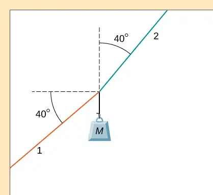
Answer
199 N
94. As shown below, if \(F=60.0\:\text{N}\) and \(M=4.00\:\text{kg,}\) what is the magnitude of the acceleration of the suspended object? All surfaces are frictionless.
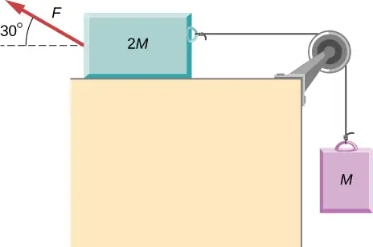
95. As shown below, if \(M=6.0\:\text{kg,}\) what is the tension in the connecting string? The pulley and all surfaces are frictionless.
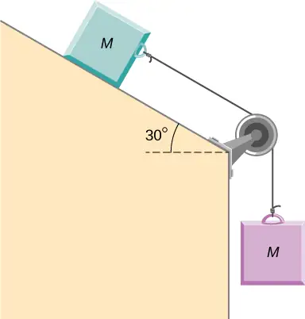
Answer
15 N
96. A small space probe is released from a spaceship. The space probe has mass 20.0 kg and contains 90.0 kg of fuel. It starts from rest in deep space, from the origin of a coordinate system based on the spaceship, and burns fuel at the rate of 3.00 kg/s. The engine provides a constant thrust of 120.0 N. (a) Write an expression for the mass of the space probe as a function of time, between 0 and 30 seconds, assuming that the engine ignites fuel beginning at \(t=0.\) (b) What is the velocity after 15.0 s? (c) What is the position of the space probe after 15.0 s, with initial position at the origin? (d) Write an expression for the position as a function of time, for \(t \gt 30.0\:\text{s}.\)
97. A half-full recycling bin has mass 3.0 kg and is pushed up a \(40.0{}^{\circ}\) incline with constant speed under the action of a 26-N force acting up and parallel to the incline. The incline has friction. What magnitude force must act up and parallel to the incline for the bin to move down the incline at constant velocity?
Answer
12 N
98. A child has mass 6.0 kg and slides down a \(35{}^{\circ}\) incline with constant speed under the action of a 13.4-N force acting up and parallel to the incline. What is the coefficient of kinetic friction between the child and the surface of the incline?
99. The two barges shown here are coupled by a cable of negligible mass. The mass of the front barge is \(2.00\:\times\:{10}^{3}\:\text{kg}\) and the mass of the rear barge is \(3.00\:\times\:{10}^{3}\:\text{kg}.\) A tugboat pulls the front barge with a horizontal force of magnitude \(20.0\:\times\:{10}^{3}\:\text{N,}\) and the frictional forces of the water on the front and rear barges are \(8.00\:\times\:{10}^{3}\:\text{N}\) and \(10.0\:\times\:{10}^{3}\:\text{N,}\) respectively. Find the horizontal acceleration of the barges and the tension in the connecting cable.
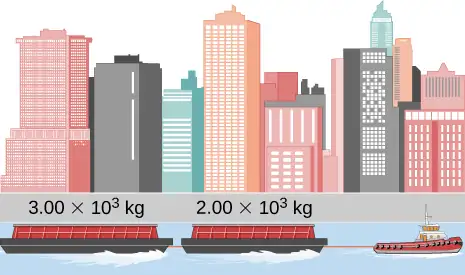
Answer
\(a_{x}=0.40\:\text{m/s}^{2}\) and \(T=11.2\:\times\:{10}^{3}\:\text{N}\)
100. If the order of the barges of the preceding exercise is reversed so that the tugboat pulls the \(3.00\:\times\:{10}^{3}\text{-kg}\) barge with a force of \(20.0\:\times\:{10}^{3}\:\text{N},\) what are the acceleration of the barges and the tension in the coupling cable?
101. An object with mass m moves along the x-axis. Its position at any time is given by \(x(t)=pt^{3}+qt^{2}\) where p and q are constants. Find the net force on this object for any time t.
Answer
m(6pt + 2q)
102. A helicopter with mass \(2.35\:\times\:{10}^{4}\:\text{kg}\) has a position given by \(\mathbf{\vec{r}}(t)=(0.020\:t^{3})\mathbf{\hat{i}}+(2.2t)\mathbf{\hat{j}}-(0.060\:t^{2})\mathbf{\hat{k}}.\) Find the net force on the helicopter at \(t=3.0\:\text{s}.\)
103. Located at the origin, an electric car of mass m is at rest and in equilibrium. A time dependent force of \(\mathbf{\vec{F}}(t)\) is applied at time \(t=0\), and its components are \(F_{x}(t)=p+nt\) and \(F_{y}(t)=qt\) where p, q, and n are constants. Find the position \(\mathbf{\vec{r}}(t)\) and velocity \(\mathbf{\vec{v}}(t)\) as functions of time t.
Answer
\(\mathbf{\vec{v}}(t)=\left( \frac{pt}{m}+\frac{nt^{2}}{2m} \right)\mathbf{\hat{i}}+\left( \frac{qt^{2}}{2m} \right)\mathbf{\hat{j}}\) and \(\mathbf{\vec{r}}(t)=\left( \frac{pt^{2}}{2m}+\frac{nt^{3}}{6m} \right)\mathbf{\hat{i}}+\left( \frac{qt^{3}}{6m} \right)\mathbf{\hat{j}}\)
104. A particle of mass m is located at the origin. It is at rest and in equilibrium. A time-dependent force of \(\mathbf{\vec{F}}(t)\) is applied at time \(t=0\), and its components are \(F_{x}(t)=pt\) and \(F_{y}(t)=n+qt\) where p, q, and n are constants. Find the position \(\mathbf{\vec{r}}(t)\) and velocity \(\mathbf{\vec{v}}(t)\) as functions of time t.
105. A 2.0-kg object has a velocity of \(4.0\mathbf{\hat{i}}\:\text{m/s}\) at \(t=0.\) A constant resultant force of \((2.0\mathbf{\hat{i}}+4.0\mathbf{\hat{j}})\:\text{N}\) then acts on the object for 3.0 s. What is the magnitude of the object’s velocity at the end of the 3.0-s interval?
Answer
9.2 m/s
106. A 1.5-kg mass has an acceleration of \((4.0\mathbf{\hat{i}}-3.0\mathbf{\hat{j}})\:\text{m/s}^{2}.\) Only two forces act on the mass. If one of the forces is \((2.0\mathbf{\hat{i}}-1.4\mathbf{\hat{j}})\:\text{N,}\) what is the magnitude of the other force?
107. A box is dropped onto a conveyor belt moving at 3.4 m/s. If the coefficient of friction between the box and the belt is 0.27, how long will it take before the box moves without slipping?
Answer
1.3 s
108. Shown below is a 10.0-kg block being pushed by a horizontal force \(\mathbf{\vec{F}}\) of magnitude 200.0 N. The coefficient of kinetic friction between the two surfaces is 0.50. Find the acceleration of the block.
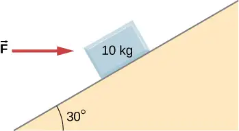
109. As shown below, the mass of block 1 is \(m_{1}=4.0\:\text{kg,}\) while the mass of block 2 is \(m_{2}=8.0\:\text{kg}.\) The coefficient of friction between \(m_{1}\) and the inclined surface is \(\mu_{\text{k}}=0.40.\) What is the acceleration of the system?
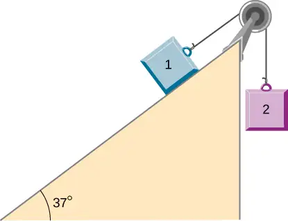
Answer
\(3.5\:\text{m/s}^{2}\)
110. A student is attempting to move a 30-kg mini-fridge into her dorm room. During a moment of inattention, the mini-fridge slides down a 35 degree incline at constant speed when she applies a force of 25 N acting up and parallel to the incline. What is the coefficient of kinetic friction between the fridge and the surface of the incline?
111. A crate of mass 100.0 kg rests on a rough surface inclined at an angle of \(37.0{}^{\circ}\) with the horizontal. A massless rope to which a force can be applied parallel to the surface is attached to the crate and leads to the top of the incline. In its present state, the crate is just ready to slip and start to move down the plane. The coefficient of friction is \(80\%\) of that for the static case. (a) What is the coefficient of static friction? (b) What is the maximum force that can be applied upward along the plane on the rope and not move the block? (c) With a slightly greater applied force, the block will slide up the plane. Once it begins to move, what is its acceleration and what reduced force is necessary to keep it moving upward at constant speed? (d) If the block is given a slight nudge to get it started down the plane, what will be its acceleration in that direction? (e) Once the block begins to slide downward, what upward force on the rope is required to keep the block from accelerating downward?
Answer
a. 0.75; b. 1200 N; c. \(1.2\:\text{m/s}^{2}\) and 1080 N; d. \(-1.2\:\text{m/s}^{2};\) e. 120 N
112. A car is moving at high speed along a highway when the driver makes an emergency braking. The wheels become locked (stop rolling), and the resulting skid marks are 32.0 meters long. If the coefficient of kinetic friction between tires and road is 0.550, and the acceleration was constant during braking, how fast was the car going when the wheels became locked?
113. A crate having mass 50.0 kg falls horizontally off the back of the flatbed truck, which is traveling at 100 km/h. Find the value of the coefficient of kinetic friction between the road and crate if the crate slides 50 m on the road in coming to rest. The initial speed of the crate is the same as the truck, 100 km/h.
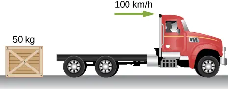
Answer
0.789
114. A 15-kg sled is pulled across a horizontal, snow-covered surface by a force applied to a rope at 30 degrees with the horizontal. The coefficient of kinetic friction between the sled and the snow is 0.20. (a) If the force is 33 N, what is the horizontal acceleration of the sled? (b) What must the force be in order to pull the sled at constant velocity?
115. A 30.0-g ball at the end of a string is swung in a vertical circle with a radius of 25.0 cm. The tangential velocity is 200.0 cm/s. Find the tension in the string: (a) at the top of the circle, (b) at the bottom of the circle, and (c) at a distance of 12.5 cm from the center of the circle \((r=12.5\:\text{cm}).\)
Answer
a. 0.186 N; b. 0.774 N; c. 0.48 N
116. A particle of mass 0.50 kg starts moves through a circular path in the xy-plane with a position given by \(\mathbf{\vec{r}}(t)=(4.0\:\cos\:3t)\mathbf{\hat{i}}+(4.0\:\sin\:3t)\mathbf{\hat{j}}\) where r is in meters and t is in seconds. (a) Find the velocity and acceleration vectors as functions of time. (b) Show that the acceleration vector always points toward the center of the circle (and thus represents centripetal acceleration). (c) Find the centripetal force vector as a function of time.
117. A stunt cyclist rides on the interior of a cylinder 12 m in radius. The coefficient of static friction between the tires and the wall is 0.68. Find the value of the minimum speed for the cyclist to perform the stunt.
Answer
13 m/s
118. When a body of mass 0.25 kg is attached to a vertical massless spring, it is extended 5.0 cm from its unstretched length of 4.0 cm. The body and spring are placed on a horizontal frictionless surface and rotated about the held end of the spring at 2.0 rev/s. How far is the spring stretched?
119. A piece of bacon starts to slide down the pan when one side of a pan is raised up 5.0 cm. If the length of the pan from pivot to the raising point is 23.5 cm, what is the coefficient of static friction between the pan and the bacon?
Answer
0.21
120. A plumb bob hangs from the roof of a railroad car. The car rounds a circular track of radius 300.0 m at a speed of 90.0 km/h. At what angle relative to the vertical does the plumb bob hang?
121. An airplane flies at 120.0 m/s and banks at a \(30{}^{\circ}\) angle. If its mass is \(2.50\:\times\:{10}^{3}\:\text{kg,}\) (a) what is the magnitude of the lift force? (b) what is the radius of the turn?
Answer
a. 28,300 N; b. 2540 m
122. The position of a particle is given by \(\mathbf{\vec{r}}(t)=A(\cos\:\omega t\mathbf{\hat{i}}+\sin\:\omega t\mathbf{\hat{j}}),\) where \(\omega\) is a constant. (a) Show that the particle moves in a circle of radius A. (b) Calculate \(d\mathbf{\vec{r}}\text{/}dt\) and then show that the speed of the particle is a constant \(A_{\omega}.\) (c) Determine \(d^{2}\mathbf{\vec{r}}\text{/}dt^{2}\) and show that a is given by\(a_{\text{c}}=r\omega^{2}.\) (d) Calculate the centripetal force on the particle. [Hint: For (b) and (c), you will need to use \((d\text{/}dt)(\cos\:\omega t)=-\omega\:\sin\:\omega t\) and \((d\text{/}dt)(\sin\:\omega t)=\omega\:\cos\:\omega t.\)
123. Two blocks connected by a string are pulled across a horizontal surface by a force applied to one of the blocks, as shown below. The coefficient of kinetic friction between the blocks and the surface is 0.25. If each block has an acceleration of \(2.0\:\text{m/s}^{2}\) to the right, what is the magnitude F of the applied force?
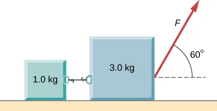
Answer
25 N
124. As shown below, the coefficient of kinetic friction between the surface and the larger block is 0.20, and the coefficient of kinetic friction between the surface and the smaller block is 0.30. If \(F=10\:\text{N}\) and \(M=1.0\:\text{kg}\), what is the tension in the connecting string?
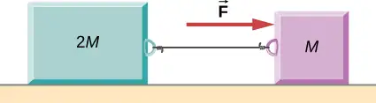
125. In the figure, the coefficient of kinetic friction between the surface and the blocks is \(\mu_{\text{k}}.\) If \(M=1.0\:\text{kg,}\) find an expression for the magnitude of the acceleration of either block (in terms of F, \(\mu_{\text{k}},\) and g).
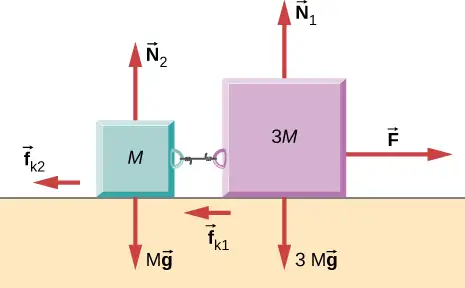
Answer
\(a=\frac{F}{4}-\mu_{k}g\)
126. Two blocks are stacked as shown below, and rest on a frictionless surface. There is friction between the two blocks (coefficient of friction \(\mu\)). An external force is applied to the top block at an angle \(\theta\) with the horizontal. What is the maximum force F that can be applied for the two blocks to move together?
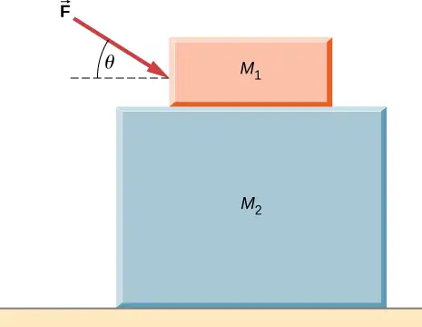
127. A box rests on the (horizontal) back of a truck. The coefficient of static friction between the box and the surface on which it rests is 0.24. What maximum distance can the truck travel (starting from rest and moving horizontally with constant acceleration) in 3.0 s without having the box slide?
Answer
11 m
128. A double-incline plane is shown below. The coefficient of friction on the left surface is 0.30, and on the right surface 0.16. Calculate the acceleration of the system.
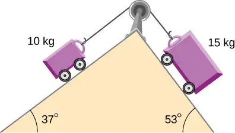
Challenge Problems¶
129. In a later chapter, you will find that the weight of a particle varies with altitude such that \(w=\frac{mgr_{0}{}^{2}}{r^{2}}\) where \(r_{0}{}^{}\) is the radius of Earth and r is the distance from Earth’s center. If the particle is fired vertically with velocity \(v_{0}{}^{}\) from Earth’s surface, determine its velocity as a function of position r. (Hint: use \(a^{}dr=v^{}dv,\) the rearrangement mentioned in the text.)
Answer
\(v=\sqrt{v_{0}{}^{2}-2gr_{0}\left( 1-\frac{r_{0}}{r} \right)}\)
130. A large centrifuge, like the one shown below, is used to expose aspiring astronauts to accelerations similar to those experienced in rocket launches and atmospheric reentries. (a) At what angular velocity is the centripetal acceleration 10g if the rider is 15.0 m from the center of rotation? (b) The rider’s cage hangs on a pivot at the end of the arm, allowing it to swing outward during rotation as shown in the bottom accompanying figure. At what angle \(\theta\) below the horizontal will the cage hang when the centripetal acceleration is 10g? (Hint: The arm supplies centripetal force and supports the weight of the cage. Draw a free-body diagram of the forces to see what the angle \(\theta\) should be.)
![(a) A photograph of a high g training centrifuge. The astronaut sits in a cage at the end of a long arm that rotates in a horizontal plane. (b) An illustration of a top view of the centrifuge along with an illustration of the forces. The free body diagram shows the weight, w, pointing vertically down and the force F sub arm pointing up and to the left. The forces are then shown rearranged to form a right triangle. F sub arm is the hypotenuse of the triangle pointing up and left, w is the vertical side pointing down, and F sub c is the base pointing to the left. The F sub c arrow is then shown separately with the notation that vector F sub c equals F sub net.](img/cnx-uphysics-06-03-p22-img.webp)
131. A car of mass 1000.0 kg is traveling along a level road at 100.0 km/h when its brakes are applied. Calculate the stopping distance if the coefficient of kinetic friction of the tires is 0.500. Neglect air resistance. (Hint: since the distance traveled is of interest rather than the time, x is the desired independent variable and not t. Use the Chain Rule to change the variable: \(\frac{dv}{dt}=\frac{dv}{dx}\:\frac{dx}{dt}=v\frac{dv}{dx}.)\)
Answer
78.7 m
132. An airplane flying at 200.0 m/s makes a turn that takes 4.0 min. What bank angle is required? What is the percentage increase in the perceived weight of the passengers?
133. A skydiver is at an altitude of 1520 m. After 10.0 seconds of free fall, he opens his parachute and finds that the air resistance, \(F_{\text{D}}\), is given by the formula \(F_{\text{D}}=-bv,\) where b is a constant and v is the velocity. If \(b=7.50,\) and the mass of the skydiver is 82.0 kg, first set up differential equations for the velocity and the position, and then find: (a) the speed of the skydiver when the parachute opens, (b) the distance fallen before the parachute opens, (c) the terminal velocity after the parachute opens (find the limiting velocity), and (d) the time the skydiver is in the air after the parachute opens.
Answer
a. 98 m/s; b. 490 m; c. 107 m/s; d. 10.1 s
134. In a television commercial, a small, spherical bead of mass 4.00 g is released from rest at \(t=0\) in a bottle of liquid shampoo. The terminal speed is observed to be 2.00 cm/s. Find (a) the value of the constant b in the equation \(v=\frac{mg}{b}(1-e^{-bt\text{/}m}),\) and (b) the value of the resistive force when the bead reaches terminal speed.
135. A boater and motor boat are at rest on a lake. Together, they have mass 200.0 kg. If the thrust of the motor is a constant force of 40.0 N in the direction of motion, and if the resistive force of the water is numerically equivalent to 2 times the speed v of the boat, set up and solve the differential equation to find: (a) the velocity of the boat at time t; (b) the limiting velocity (the velocity after a long time has passed).
Answer
a. \(v=20.0(1-e^{-0.01t});\) b. \(v_{\text{limiting}}=20\:\text{m/s}\)
Adapted from University Physics Volume 1 by OpenStax, licensed under CC BY 4.0. Access the original for free at openstax.org. Changes: converted to the web reading format of The Open Book Project.